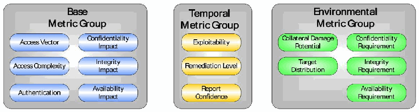
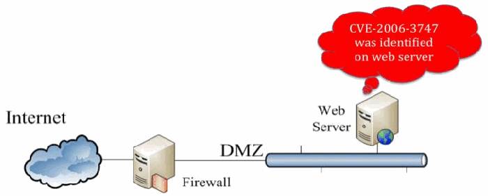
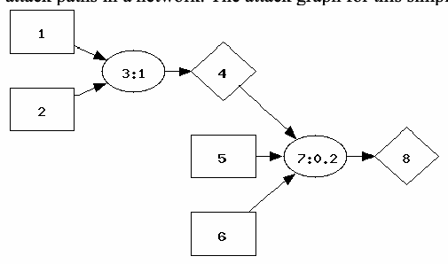
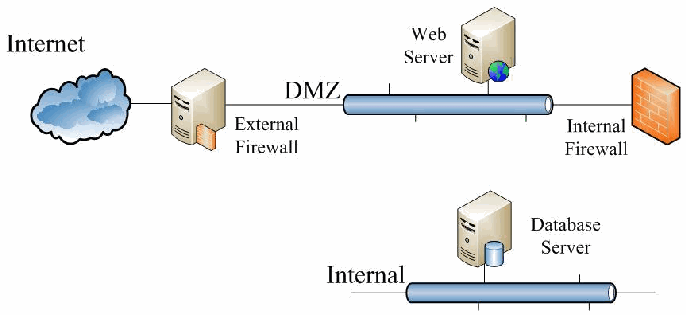
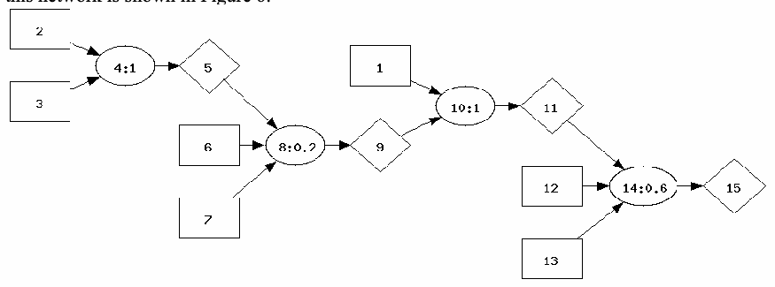
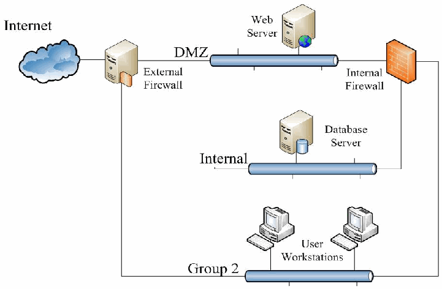

NIST IR 7788 日本語訳
英語タイトル : Security Risk Analysis of Enterprise Networks Using Probabilistic Attack Graphs日本語タイトル : 確率的攻撃グラフを用いたエンタープライズネットワークのセキュリティリスク分析
公開日 : 2011-08-01
原文URL : https://csrc.nist.gov/pubs/ir/7788/final
翻訳編集 : 自動生成（有志による非公式の日本語訳）, 原文取得日 : 2026-10-31, 訳文 : 205 / 208 ブロック
[要約] NIST IR 7788 は、エンタープライズネットワークのセキュリティリスクを客観的に評価するためのモデルと指標、およびそれらを使ってサイバー防御の意思決定を導く手法を開発した報告書です。攻撃グラフ、セキュリティリスク分析に関するこれまでの研究、共通脆弱性評価システム（CVSS）を取り上げたうえで、攻撃グラフに既知の脆弱性とその悪用の可能性を注釈として付ける、確率的攻撃グラフのモデルを示します。攻撃グラフに沿ってエクスプロイトの可能性を伝播させることで、エンタープライズネットワーク全体のセキュリティリスクを定量化する指標を計算し、攻撃グラフの生成には MULVAL ツールを使用しています。結論では、本書で論じた実験が、このアプローチの有効性と、システム管理者が異なるリスク低減の選択肢の中から決定するためにそれをどのように使えるかを示すと述べています。
［NIST のロゴ。公的な標章のため、この非公式サイトには掲載していません。原本 PDF を参照してください。］
NIST Interagency Report 7788
NIST 省庁間報告書 7788
Security Risk Analysis of Enterprise Networks Using Probabilistic Attack Graphs
確率的攻撃グラフを用いたエンタープライズネットワークのセキュリティリスク分析
Anoop Singhal
Ximming Ou
Anoop Singhal
Ximming Ou
NIST Interagency Report 7788
NIST 省庁間報告書 7788
Security Risk Analysis of Enterprise Networks Using Probabilistic Attack Graphs
確率的攻撃グラフを用いたエンタープライズネットワークのセキュリティリスク分析
Anoop Singhal
Ximming Ou
Anoop Singhal
Ximming Ou
COMPUTER SECURITY
コンピューターセキュリティ
Computer Security Division
Information Technology Laboratory
National Institute of Standards and Technology
Gaithersburg, MD 20899-8930
コンピューターセキュリティ部門
情報技術研究所
国立標準技術研究所
Gaithersburg, MD 20899-8930
August 2011
2011 年 8 月
U.S. Department of Commerce
米国商務省
Rebecca M. Blank, Acting Secretary
Rebecca M. Blank 長官代行
National Institute of Standards and Technology
国立標準技術研究所
Patrick D. Gallagher, Director
Patrick D. Gallagher 所長
Reports on Computer Systems Technology
コンピューターシステム技術に関する報告書
The Information Technology Laboratory (ITL) at the National Institute of Standards and Technology (NIST) promotes the U.S. economy and public welfare by providing technical leadership for the nation’s measurement and standards infrastructure. ITL develops tests, test methods, reference data, proof of concept implementations, and technical analysis to advance the development and productive use of information technology. ITL’s responsibilities include the development of technical, physical, administrative, and management standards and guidelines for the cost-effective security and privacy of sensitive unclassified information in federal computer systems. This Internal Report discusses ITL’s research, guidance, and outreach efforts in computer security and its collaborative activities with industry, government, and academic organizations.
国立標準技術研究所（NIST）の情報技術研究所（ITL）は、国の計測・標準インフラストラクチャに対して技術的なリーダーシップを提供することにより、米国経済と公共の福祉を増進しています。ITL は、情報技術の開発と有効利用を推進するため、テスト、テスト方法、参照データ、概念実証の実装、および技術分析を開発しています。ITL の責務には、連邦コンピューターシステムにおける機微な非機密情報のセキュリティとプライバシーを費用対効果よく確保するための、技術的、物理的、管理的、およびマネジメントの標準とガイドラインの開発が含まれます。この内部報告書は、コンピューターセキュリティにおける ITL の研究、ガイダンス、アウトリーチの取り組みと、産業界、政府、学術機関との共同活動について論じています。
National Institute of Standards and Technology Interagency Report 7788
# pages (August 2011)
国立標準技術研究所 省庁間報告書 7788
# ページ（2011 年 8 月）
Certain commercial entities, equipment, or materials may be identified in this document in order to describe an experimental procedure or concept adequately. Such identification is not intended to imply recommendation or endorsement by the National Institute of Standards and Technology, nor is it intended to imply that the entities, materials, or equipment are necessarily the best available for the purpose.
実験の手順や概念を適切に説明するため、本書では特定の商業団体、機器、または材料に言及している場合があります。こうした言及は、国立標準技術研究所による推奨または支持を意味するものではなく、また、それらの団体、材料、または機器が当該目的に最適であることを意味するものでもありません。
Acknowledgements
謝辞
The authors Anoop Singhal and Ximming Ou would like to thank their colleagues who reviewed drafts of this document and contributed to its development. A special note of thanks goes to Peter Mell, Harold Booth, Ron Boisvert, Ramaswamy Chandramouli, and Kevin Stine of NIST for serving as reviewers for this document. The authors also acknowledge Elizabeth Lennon for her technical editing and administrative support.
著者の Anoop Singhal と Ximming Ou は、本書のドラフトをレビューし、その作成に貢献してくれた同僚に感謝します。特に、NIST の Peter Mell、Harold Booth、Ron Boisvert、Ramaswamy Chandramouli、Kevin Stine には、本書の査読者を務めていただいたことに特別な謝意を表します。また、技術編集と事務面での支援を提供してくれた Elizabeth Lennon にも謝意を表します。
Executive Summary
エグゼクティブサマリー
Today’s information systems face sophisticated attackers who combine multiple vulnerabilities to penetrate networks with devastating impact. The overall security of an enterprise network cannot be determined by simply counting the number of vulnerabilities. To more accurately assess the security of enterprise systems, one must understand how vulnerabilities can be combined and exploited to stage an attack. Composition of vulnerabilities can be modeled using probabilistic attack graphs, which show all paths of attacks that allow incremental network penetration. Attack likelihoods are propagated through the attack graph, yielding a novel way to measure the security risk of enterprise systems. This metric for risk mitigation analysis is used to maximize the security of enterprise systems. This methodology based on probabilistic attack graphs can be used to evaluate and strengthen the overall security of enterprise networks.
今日の情報システムは、複数の脆弱性を組み合わせてネットワークに侵入し、壊滅的な影響を及ぼす高度な攻撃者に直面しています。エンタープライズネットワーク全体のセキュリティは、脆弱性の数を単純に数えるだけでは判断できません。エンタープライズシステムのセキュリティをより正確に評価するには、脆弱性をどのように組み合わせ、悪用して攻撃を仕掛けられるかを理解しなければなりません。脆弱性の組み合わせは、段階的なネットワーク侵入を可能にする攻撃経路をすべて示す、確率的攻撃グラフを使ってモデル化できます。攻撃の可能性を攻撃グラフに沿って伝播させることで、エンタープライズシステムのセキュリティリスクを測定する新しい方法が得られます。リスク低減分析のためのこの指標は、エンタープライズシステムのセキュリティを最大化するために使用されます。確率的攻撃グラフに基づくこの方法論は、エンタープライズネットワーク全体のセキュリティを評価し、強化するために使用できます。
Audience
想定読者
This document is intended for three primary audiences:
本書は、主に次の 3 種類の読者を想定しています。
•Federal agencies seeking information on how to use probabilistic attack graphs for security risk analysis of their enterprise networks;
•エンタープライズネットワークのセキュリティリスク分析に確率的攻撃グラフを使用する方法についての情報を求める連邦機関
•Vendor communities seeking to understand the methodology of security risk analysis using probabilistic attack graphs and to build new tools in this area; and
•確率的攻撃グラフを用いたセキュリティリスク分析の方法論を理解し、この分野の新しいツールを構築しようとするベンダーコミュニティ
•Research communities seeking to understand some of the challenges in the area of enterprise network security and new research opportunities to address problems in this area.
•エンタープライズネットワークセキュリティの分野の課題と、この分野の問題に対処するための新たな研究の機会を理解しようとする研究コミュニティ。
Table of Contents
目次
1. Introduction
1. はじめに
At present, computer networks constitute the core component of information technology infrastructures in areas such as power grids, financial data systems, and emergency communication systems. Protection of these networks from malicious intrusions is critical to the economy and security of our nation. Vulnerabilities are regularly discovered in software applications which are exploited to stage cyber attacks. Currently, management of security risk of an enterprise network is more an art than a science. System administrators operate by instinct and experience rather than relying on objective metrics to guide and justify decision making. In this report, we develop models and metrics that can be used to objectively assess the security risk in an enterprise network, and techniques on how to use such metrics to guide decision making in cyber defense.
現在、コンピューターネットワークは、電力網、金融データシステム、緊急通信システムなどの分野で、情報技術インフラストラクチャの中核的な構成要素となっています。これらのネットワークを悪意のある侵入から保護することは、わが国の経済と安全保障にとって極めて重要です。ソフトウェアアプリケーションでは脆弱性が定期的に発見されており、それらがサイバー攻撃を仕掛けるために悪用されています。現在、エンタープライズネットワークのセキュリティリスクの管理は、科学というよりも技芸に近いものです。システム管理者は、意思決定を導き、正当化するための客観的な指標に頼るのではなく、直感と経験に基づいて動いています。本報告書では、エンタープライズネットワークのセキュリティリスクを客観的に評価するために使用できるモデルと指標、およびそのような指標を使ってサイバー防御の意思決定を導く手法を開発します。
To improve the security of enterprise networks, it is necessary to measure the amount of security provided by different network configurations. The objective of our research was to develop a standard model for measuring security of computer networks. A standard model will enable us to answer questions such as “Are we more secure than yesterday?” or “How does the security of one network configuration compare with another?” Also, having a standard model to measure network security will bring together users, vendors, and researchers to evaluate methodologies and products for network security.
エンタープライズネットワークのセキュリティを向上させるには、さまざまなネットワーク構成が提供するセキュリティの程度を測定する必要があります。私たちの研究の目的は、コンピューターネットワークのセキュリティを測定するための標準モデルを開発することでした。標準モデルがあれば、「昨日より安全になったか」「あるネットワーク構成のセキュリティは、別の構成と比べてどうか」といった問いに答えられるようになります。また、ネットワークセキュリティを測定する標準モデルがあれば、ネットワークセキュリティの方法論や製品を評価するために、ユーザー、ベンダー、研究者が一堂に会することになります。
Some of the challenges for security risk analysis of enterprise networks are:
エンタープライズネットワークのセキュリティリスク分析における課題には、次のようなものがあります。
a.Security vulnerabilities are rampant: CERT1 reports about a hundred new security vulnerabilities each week. It becomes difficult to manage the security of an enterprise network (with hundreds of hosts and different operating systems and applications on each host) in the presence of software vulnerabilities that can be exploited.
a.セキュリティ脆弱性が蔓延している: CERT1は、毎週約 100 件の新しいセキュリティ脆弱性を報告しています。悪用され得るソフトウェアの脆弱性が存在する中で、（数百のホストがあり、各ホストでオペレーティングシステムとアプリケーションが異なる）エンタープライズネットワークのセキュリティを管理することは困難になります。
b.Attackers launch complex multistep cyber attacks: Cyber attackers can launch multistep and multi-host attacks that can incrementally penetrate the network with the goal of eventually compromising critical systems. It is a challenging task to protect the critical systems from such attacks.
b.攻撃者は複雑な多段階のサイバー攻撃を仕掛ける: サイバー攻撃者は、最終的に重要なシステムを危殆化することを目標に、ネットワークに段階的に侵入できる、多段階かつ複数ホストにわたる攻撃を仕掛けられます。このような攻撃から重要なシステムを守ることは、難しい課題です。
c.Current attack detection methods cannot deal with the complexity of attacks: Computer systems are increasingly under attack. When new vulnerabilities are reported, attack programs are available in a short amount of time. Traditional approaches to detecting attacks (using an Intrusion Detection System) have problems such as too many false positives, limited scalability, and limits on detecting attacks.
c.現在の攻撃検知手法は攻撃の複雑さに対処できない: コンピューターシステムは、ますます攻撃を受けるようになっています。新しい脆弱性が報告されると、短時間で攻撃プログラムが入手可能になります。攻撃を検知する従来のアプローチ（侵入検知システムの使用）には、誤検知が多すぎる、スケーラビリティが限られている、攻撃の検知に限界があるといった問題があります。
Good metrics should be measured consistently, inexpensive to collect, expressed numerically, have units of measure, and have specific context [1]. We meet this challenge by capturing vulnerability interdependencies and measuring security in the exact way that real attackers penetrate the network. We analyze all attack paths through a network, providing a metric of overall system risk. Through this metric, we analyze trade-offs between security costs and security benefits. Decision makers can therefore avoid over investing in security measures that do not pay off, or under investing and risk devastating consequences. Our metric is consistent, unambiguous, and provides context for understanding security risk of computer networks.
よい指標は、一貫して測定でき、収集にコストがかからず、数値で表され、測定の単位があり、特定の文脈を持ちます [1]。私たちはこの課題に、脆弱性の相互依存関係を捉え、実際の攻撃者がネットワークに侵入するのとまったく同じ方法でセキュリティを測定することで対処します。ネットワークを通るすべての攻撃経路を分析し、システム全体のリスクの指標を提供します。この指標を通じて、セキュリティのコストと便益のトレードオフを分析します。これにより、意思決定者は、見返りのないセキュリティ対策への過剰な投資や、壊滅的な結果を招くリスクのある過少投資を避けられます。私たちの指標は、一貫しており、曖昧さがなく、コンピューターネットワークのセキュリティリスクを理解するための文脈を提供します。
This report is organized as follows. Section 2 presents attack graphs and tools for generating attack graphs. Section 3 discusses past work in the area of security risk analysis. Section 4 discusses the Common Vulnerability Scoring System (CVSS). Section 5 discusses security risk analysis of enterprise networks using attack graphs. Section 6 presents some of the challenges for security risk analysis and, finally, Section 7 gives the conclusions.
本報告書は、次のように構成されています。第 2 節では、攻撃グラフと、攻撃グラフを生成するツールを示します。第 3 節では、セキュリティリスク分析の分野における過去の研究を論じます。第 4 節では、共通脆弱性評価システム（CVSS）を論じます。第 5 節では、攻撃グラフを用いたエンタープライズネットワークのセキュリティリスク分析を論じます。第 6 節では、セキュリティリスク分析の課題のいくつかを示し、最後に、第 7 節で結論を述べます。
2. Attack Graphs
2. 攻撃グラフ
Attack graphs model how multiple vulnerabilities may be combined for an attack. They represent system states using a collection of security-related conditions, such as the existence of vulnerability on a particular host or the connectivity between different hosts. Vulnerability exploitation is modeled as a transition between system states.
攻撃グラフは、複数の脆弱性をどのように組み合わせて攻撃できるかをモデル化します。攻撃グラフは、特定のホストに脆弱性があることや、異なるホスト間の接続性など、セキュリティに関連する条件の集まりを使って、システムの状態を表します。脆弱性の悪用は、システムの状態間の遷移としてモデル化されます。
As an example, consider Figure 1. The left side shows a network configuration, and the right side shows the attack graph for compromise of the database server by a malicious workstation user. In the network configuration, the firewall is intended to help protect the internal network. The internal file server offers file transfer (ftp), secure shell (ssh), and remote shell (rsh) services. The internal database server offers ftp and rsh services. The firewall allows ftp, ssh, and rsh traffic from a user workstation to both servers, and blocks all other traffic.
例として、図 1 を考えます。左側はネットワーク構成を示し、右側は、悪意のあるワークステーションのユーザーによるデータベースサーバーの危殆化についての攻撃グラフを示しています。このネットワーク構成では、ファイアウォールが内部ネットワークの保護を助けることを意図しています。内部のファイルサーバーは、ファイル転送（ftp）、セキュアシェル（ssh）、リモートシェル（rsh）のサービスを提供します。内部のデータベースサーバーは、ftp と rsh のサービスを提供します。ファイアウォールは、ユーザーのワークステーションから両方のサーバーへの ftp、ssh、rsh のトラフィックを許可し、他のすべてのトラフィックを遮断します。
In the attack graph, attacker exploits are blue ovals, with edges for their preconditions and postconditions. The numbers inside parentheses denote source and destination hosts. Yellow boxes are initial network conditions, and the green triangle is the attacker’s initial capability. Conditions induced by attacker exploits are plain text. The overall attack goal is a red octagon. The figure also shows the direct impact of blocking ssh or rsh traffic (to the fileserver) through the firewall, i.e., preventing certain exploits in the attack graph.
攻撃グラフでは、攻撃者のエクスプロイトは青い楕円で、その事前条件と事後条件は辺で示されています。括弧内の数字は、送信元ホストと宛先ホストを表します。黄色の四角は初期のネットワーク条件、緑の三角は攻撃者の初期の能力です。攻撃者のエクスプロイトによって生じる条件は、通常のテキストで示されています。攻撃全体の目標は、赤い八角形です。この図は、ファイアウォールで（ファイルサーバーへの）ssh または rsh のトラフィックを遮断した場合の、すなわち攻撃グラフ内の特定のエクスプロイトを阻止した場合の直接の影響も示しています。
![Diagram in two parts. Left: a network configuration. A "Workstation" (Machine 0) connects through a "Firewall" to a "Router", which connects to a "File Server" (Machine 1) offering ftp, rsh and ssh services and to a "Database Server" (Machine 2) offering ftp and rsh services. Right: an attack graph. Yellow boxes for initial conditions (ftp_c(0,2), ftp_c(0,1), ssh_c(0,1), rsh_c(0,2), rsh_c(0,1), ftp_c(1,2), rsh_c(1,2)), a green triangle "execute(0)" for the attacker's initial capability, blue ovals for exploits (ftp_rhosts(0,2), ftp_rhosts(0,1), sshd_bof(0,1), rsh(0,2), rsh(0,1), ftp_rhosts(1,2), rsh(1,2), local_bof(2)), plain-text conditions (trust(2,0), trust(1,0), execute(1), trust(2,1), execute(2)) and a red octagon goal "superuser(2)". execute(0) leads to ftp_rhosts(0,2), ftp_rhosts(0,1), sshd_bof(0,1), rsh(0,2) and rsh(0,1); the paths converge through execute(1), ftp_rhosts(1,2), trust(2,1), rsh(1,2) and execute(2) to local_bof(2) and superuser(2). A blue arrow labeled "Block ssh" points to ssh_c(0,1) and sshd_bof(0,1); a pink arrow labeled "Block rsh" points to rsh_c(0,1) and rsh(0,1).](assets/ir-7788/p0008-figure-04.png)
2つの部分からなる図です。左はネットワーク構成で、「Workstation」（Machine 0）が「Firewall」を経て「Router」に接続し、Router は ftp・rsh・ssh を提供する「File Server」（Machine 1）と、ftp・rsh を提供する「Database Server」（Machine 2）に接続しています。右は攻撃グラフです。黄色の箱は初期条件（ftp_c(0,2)、ftp_c(0,1)、ssh_c(0,1)、rsh_c(0,2)、rsh_c(0,1)、ftp_c(1,2)、rsh_c(1,2)）、緑の三角形「execute(0)」は攻撃者の初期の能力、青い楕円はエクスプロイト（ftp_rhosts(0,2)、ftp_rhosts(0,1)、sshd_bof(0,1)、rsh(0,2)、rsh(0,1)、ftp_rhosts(1,2)、rsh(1,2)、local_bof(2)）、枠のない文字は条件（trust(2,0)、trust(1,0)、execute(1)、trust(2,1)、execute(2)）、赤い八角形は目標「superuser(2)」です。execute(0) から ftp_rhosts(0,2)、ftp_rhosts(0,1)、sshd_bof(0,1)、rsh(0,2)、rsh(0,1) へ進み、経路は execute(1)、ftp_rhosts(1,2)、trust(2,1)、rsh(1,2)、execute(2) を経て local_bof(2) と superuser(2) に至ります。青い矢印「Block ssh」は ssh_c(0,1) と sshd_bof(0,1) を、桃色の矢印「Block rsh」は rsh_c(0,1) と rsh(0,1) を指しています。
Figure 1: Example network, attack graph, and network hardening choices
図 1: ネットワーク例、攻撃グラフ、およびネットワーク堅牢化の選択肢
The attack graph includes these attack paths:
攻撃グラフには、次の攻撃経路が含まれています。
a.sshd_bof(0,1) → ftp_rhosts(1,2) → rsh(1,2) → local_bof(2)
a.sshd_bof(0,1) → ftp_rhosts(1,2) → rsh(1,2) → local_bof(2)
b.ftp_rhosts(0,1) → rsh(0,1) → ftp_rhosts(1,2) → rsh(1,2) → local_bof(2)
b.ftp_rhosts(0,1) → rsh(0,1) → ftp_rhosts(1,2) → rsh(1,2) → local_bof(2)
c.ftp_rhosts(0,2) → rsh(0,2) → local_bof(2)
c.ftp_rhosts(0,2) → rsh(0,2) → local_bof(2)
The first attack path starts with sshd_bof(0,1). This indicates a buffer overflow exploit executed from Machine 0 (the workstation) against Machine 1 (the file server), i.e., against its secure shell service. In a buffer overflow attack, a program is made to erroneously store data beyond a fixed-length buffer, overwriting adjacent memory that holds program control-flow data. The result of the sshd_bof(0,1) exploit is that the attacker can execute arbitrary code on the file server. The ftp_rhosts(1,2) exploit is now possible, meaning that the attacker exploits a particular ftp vulnerability to anonymously upload a list of trusted hosts from Machine 1 (the file server) to Machine 2 (the database server). The attacker can leverage this new trust to remotely execute shell commands on the database server, without providing a password, i.e., the rsh(1,2) exploit. This exploit establishes the attacker’s control over the database server as a user with regular privileges. A local buffer overflow exploit is then possible on the database server, which runs in the context of a privileged process. The result is that the attacker can execute code on the database server with full privileges.
最初の攻撃経路は sshd_bof(0,1) で始まります。これは、マシン 0（ワークステーション）からマシン 1（ファイルサーバー）、すなわちそのセキュアシェルサービスに対して実行されるバッファオーバーフローのエクスプロイトを示します。バッファオーバーフロー攻撃では、プログラムが固定長のバッファを超えてデータを誤って格納するように仕向けられ、プログラムの制御フローのデータを保持する隣接メモリが上書きされます。sshd_bof(0,1) のエクスプロイトの結果、攻撃者はファイルサーバー上で任意のコードを実行できます。これで ftp_rhosts(1,2) のエクスプロイトが可能になります。これは、攻撃者が特定の ftp の脆弱性を悪用して、信頼されたホストのリストを、マシン 1（ファイルサーバー）からマシン 2（データベースサーバー）へ匿名でアップロードすることを意味します。攻撃者は、この新たな信頼を利用して、パスワードを提供することなく、データベースサーバー上でシェルコマンドをリモートで実行できます。これが rsh(1,2) のエクスプロイトです。このエクスプロイトによって、攻撃者は一般権限のユーザーとして、データベースサーバーの制御を確立します。次に、特権プロセスのコンテキストで動作するデータベースサーバーで、ローカルのバッファオーバーフローのエクスプロイトが可能になります。その結果、攻撃者はデータベースサーバー上で、完全な権限でコードを実行できます。
2.1 Tools for Generating Attack Graphs
2.1 攻撃グラフを生成するツール
This section describes briefly the tools available for generating attack graphs for enterprise networks.
本節では、エンタープライズネットワークの攻撃グラフを生成するために利用できるツールを簡潔に説明します。
•TVA (Topological Analysis of Network Attack Vulnerability)
•TVA（Topological Analysis of Network Attack Vulnerability）
In [12] [13] [22], the authors describe a tool for generation of attack graphs. This approach assumes the monotonicity property of attacks, and it has polynomial time complexity. The central idea is to use an exploit dependency graph to represent the pre- and postconditions for an exploit. Then a graph search algorithm is used to chain the individual vulnerabilities and find attack paths that involve multiple vulnerabilities.
[12] [13] [22] で、著者らは攻撃グラフを生成するツールを説明しています。このアプローチは、攻撃の単調性という性質を前提としており、多項式時間の計算量です。中心となる考え方は、エクスプロイトの事前条件と事後条件を表すために、エクスプロイト依存グラフを使うことです。次に、グラフ探索アルゴリズムを使って、個々の脆弱性を連鎖させ、複数の脆弱性を含む攻撃経路を見つけます。
•NETSPA (A Network Security Planning Architecture)
•NETSPA（A Network Security Planning Architecture）
In [29] [30], the authors use attack graphs to model adversaries and the effect of simple counter measures. It creates a network model using firewall rules and network vulnerability scans. It then uses the model to compute network reachability and attack graphs representing potential attack paths for adversaries exploiting known vulnerabilities. This discovers all hosts that can be compromised by an attacker starting from one or more locations. NETSPA typically scales as O(nlogn) as the number of hosts in a typical network increases. Risk is assessed for different adversaries by measuring the total assets that can be captured by an attacker.
[29] [30] で、著者らは攻撃グラフを使って、攻撃者と単純な対策の効果をモデル化しています。このツールは、ファイアウォールのルールとネットワークの脆弱性スキャンを使ってネットワークモデルを作成します。次に、そのモデルを使ってネットワークの到達可能性と、既知の脆弱性を悪用する攻撃者の潜在的な攻撃経路を表す攻撃グラフを計算します。これにより、1 つ以上の場所から攻撃を開始する攻撃者によって危殆化され得るすべてのホストを特定します。一般的なネットワークでは、ホスト数の増加に対して NETSPA は通常 O(nlogn) でスケールします。リスクは、攻撃者が獲得できる資産の総量を測定することで、攻撃者ごとに評価されます。
•MULVAL (Multihost, multistage, Vulnerability Analysis)
•MULVAL（Multihost, multistage, Vulnerability Analysis）
In [31] [32], a network security analyzer based on Datalog is described. The information in vulnerability databases, the configuration information for each machine, and other relevant information are all encoded as Datalog facts. The reasoning engine captures the interaction among various components in the network. The reasoning engine in MULVAL scales well (O(n2)) with the size of the network.
[31] [32] では、Datalog に基づくネットワークセキュリティ分析ツールが説明されています。脆弱性データベースの情報、各マシンの構成情報、その他の関連情報は、すべて Datalog のファクトとしてエンコードされます。推論エンジンは、ネットワーク内のさまざまなコンポーネント間の相互作用を捉えます。MULVAL の推論エンジンは、ネットワークの規模に対してよくスケールします（O(n2)）。
In [19] [20] [23] [24], some recent commercial tools for vulnerability analysis and attack graph generation are described. Skybox security [19] and Red Seal Systems [20] have developed a tool that can generate attack graphs. Risk is calculated using the probability of success of an attack path multiplied by the loss associated with the compromised target. Nessus [23] and Retina [24] are vulnerability management systems that can help organizations with vulnerability assessment, mitigation, and protection.
[19] [20] [23] [24] では、脆弱性分析と攻撃グラフ生成のための、最近の商用ツールがいくつか説明されています。Skybox security [19] と Red Seal Systems [20] は、攻撃グラフを生成できるツールを開発しています。リスクは、攻撃経路が成功する確率に、危殆化した標的に関連する損失を掛けて計算されます。Nessus [23] と Retina [24] は、組織が脆弱性の評価、緩和、保護を行うのに役立つ脆弱性管理システムです。
All the tools for attack graph generation that are mentioned here are similar in capabilities. We will use the MULVAL tool in this document to illustrate our methodology of security risk analysis using attack graphs.
ここで挙げた攻撃グラフ生成のツールは、いずれも能力が似ています。本書では、攻撃グラフを用いたセキュリティリスク分析の方法論を説明するために、MULVAL ツールを使用します。
3. Past Work in Security Risk Analysis
3. セキュリティリスク分析における過去の研究
Modelers generally think about security in terms of threats, risks, and losses [1]. Good models provide a rationale for measurements, and these models can be updated and calibrated as new data becomes available. A data model can also be used to automate security calculations. Some of the benefits of automating security metrics calculations are:
モデル作成者は、一般に、セキュリティを脅威、リスク、損失の観点から考えます [1]。よいモデルは測定の根拠を提供し、これらのモデルは、新しいデータが利用可能になるたびに更新し、較正できます。データモデルは、セキュリティの計算を自動化するためにも使用できます。セキュリティ指標の計算を自動化する利点には、次のものがあります。
•Accuracy: Accuracy is required to trust the data that is collected and to develop consensus about the results.
•正確性: 収集されたデータを信頼し、結果について合意を形成するには、正確性が必要です。
•Repeatability: This is another important component of trust. If two measurements of a target can give the same consistent result, then the data can be trusted.
•再現性: これも信頼の重要な要素です。対象を 2 回測定して同じ一貫した結果が得られれば、データを信頼できます。
•Reliability: Automation of data collection will result in more reliability as it is not prone to human errors.
•信頼性: データ収集の自動化は、人為的なミスが起こりにくいため、より高い信頼性をもたらします。
•Transparency: The steps used to derive the metrics are readily apparent, and they are accurately documented.
•透明性: 指標を導出するために用いた手順が容易に明らかであり、正確に文書化されています。
Security metrics have been suggested based on criteria compliance, intrusion detection, security policy, security incidents, and actuarial modeling. Statistical methods (Markov modeling, Bayesian networks, etc.) have been used in measuring network security. Complementary to our approach, measurements of attack resistance [2] and weakest successful adversary [3] have been proposed.
セキュリティ指標は、基準への準拠、侵入検知、セキュリティポリシー、セキュリティインシデント、保険数理モデリングに基づくものが提案されています。ネットワークセキュリティの測定には、統計的手法（マルコフモデリング、ベイジアンネットワークなど）が使われてきました。私たちのアプローチを補完するものとして、攻撃耐性の測定 [2] や、攻撃に成功する最も能力の低い攻撃者 [3] を用いた測定が提案されています。
Early standardization efforts in the defense community evolved into the system security engineering capability maturity model (SSE-CMM) [4], although it does not assign quantitative measures. Lots of risk management work has been done at the National Institute of Standards and Technology (NIST) on risk identification, assessment and analysis. NIST Special Publication (SP) 800-55 [5] describes the security metrics implementation process. NIST SP 800-27 [6] describes the principles for establishing a security baseline. NIST SP 800-39 [38] is the document that describes information security standards and guidelines developed by NIST. The purpose of NIST SP 800-39 is to provide a guide for an organization-wide program for managing information security risk. NIST SP 800-55 (Revision 1) [37] provides performance measurement guide for information security. NIST SP 800-30 [36] presents a risk management guide for information technology systems. There are also standardization efforts for vulnerability scoring, such as the Common Vulnerability Scoring System (CVSS) [7], although these treat vulnerabilities in isolation, without considering attack interdependencies on target networks.
防衛コミュニティにおける初期の標準化の取り組みは、システムセキュリティエンジニアリング能力成熟度モデル（SSE-CMM）[4] へと発展しましたが、これは定量的な尺度を割り当てていません。国立標準技術研究所（NIST）では、リスクの特定、評価、分析に関して、多くのリスクマネジメントの作業が行われてきました。NIST Special Publication（SP）800-55 [5] は、セキュリティ指標の実装プロセスを説明しています。NIST SP 800-27 [6] は、セキュリティのベースラインを確立するための原則を説明しています。NIST SP 800-39 [38] は、NIST が策定した情報セキュリティの標準とガイドラインを説明する文書です。NIST SP 800-39 の目的は、情報セキュリティリスクを管理する組織全体のプログラムの指針を提供することです。NIST SP 800-55（Revision 1）[37] は、情報セキュリティの性能測定の指針を示しています。NIST SP 800-30 [36] は、情報技術システムのリスクマネジメントの指針を示しています。共通脆弱性評価システム（CVSS）[7] のような、脆弱性評価のための標準化の取り組みもありますが、これらは、対象ネットワークにおける攻撃の相互依存関係を考慮せず、脆弱性を個別に扱っています。
In early work in attack graph analysis, model checking was used to enumerate attack sequences linking initial and goal states [8][9]. Because of explicit enumeration of attack states, these approaches scale exponentially with the size of the network. With a practical assumption of monotonic logic, attack graph complexity has been shown to be polynomial rather than exponential [10][11]. Graph complexity has been further reduced, to worst-case quadratic in the number of hosts [12].
攻撃グラフ分析の初期の研究では、初期状態と目標状態を結ぶ攻撃シーケンスを列挙するために、モデル検査が使用されました [8][9]。攻撃状態を明示的に列挙するため、これらのアプローチは、ネットワークの規模に対して指数的にスケールします。単調な論理を仮定する現実的な前提により、攻撃グラフの複雑さは指数的ではなく多項式であることが示されました [10][11]。グラフの複雑さはさらに低減され、最悪の場合でもホスト数の 2 乗になりました [12]。
Further improvement is possible by grouping networks into protection domains, in which there is unrestricted connectivity among hosts within each domain [13]. With this representation, complexity is reduced to linear within each protection domain, and overall quadratic in the number of protection domains (which is typically much less than the number of hosts). Such attack graphs have been generated for tens of thousands of hosts (hundreds of domains) within a minute, excluding graph visualization [12]. A detailed description of this approach to attack graph analysis is given in [13] [14] [15].
ネットワークを保護ドメインにまとめ、各ドメイン内のホスト間の接続に制限がないものとすることで、さらなる改善が可能です [13]。この表現では、複雑さは各保護ドメイン内で線形になり、全体では保護ドメイン数（通常はホスト数よりはるかに少ない）の 2 乗になります。このような攻撃グラフは、グラフの可視化を除いて、数万のホスト（数百のドメイン）について 1 分以内に生成されています [12]。攻撃グラフ分析のこのアプローチの詳細な説明は、[13] [14] [15] にあります。
Beyond improving attack graph complexity, frameworks have been proposed for expressing network attack models [16] [17][18]. Capabilities for mapping multistep attacks have begun to appear in some commercial products [19] [20], although their limitations include not showing all possible attack paths simultaneously as needed for effective risk assessment. A more extensive review of attack graph research (as of 2005) is given in [21].
攻撃グラフの複雑さの改善にとどまらず、ネットワーク攻撃モデルを表現するためのフレームワークも提案されています [16] [17][18]。多段階攻撃を対応付ける機能は、一部の商用製品 [19] [20] に現れ始めていますが、それらには、効果的なリスク評価に必要な、あらゆる可能な攻撃経路を同時に示せないという限界があります。攻撃グラフ研究のより広範なレビュー（2005 年時点）は、[21] にあります。
There have been some attempts at measuring network security risk by combining attack graphs with individual vulnerability metrics. Frigault et al. [27] proposes converting attack graphs and individual vulnerability score into Bayesian Network for computing the cumulative probability. Wang et al. [25] recognize the existence of cycles in an attack graph and present ideas about how to propagate probabilities over cycles. In [26], techniques for enterprise network security metrics are described. In [28] [33], the concept of “Measuring the Attack Surface” is used to determine the security risk of software systems. In [34], a practical approach to quantifying security risk in enterprise networks is described.
攻撃グラフと個々の脆弱性の指標を組み合わせて、ネットワークのセキュリティリスクを測定しようとする試みがいくつかあります。Frigault ら [27] は、累積確率を計算するために、攻撃グラフと個々の脆弱性スコアをベイジアンネットワークに変換することを提案しています。Wang ら [25] は、攻撃グラフに循環が存在することを認識し、循環を通じて確率をどのように伝播させるかについての考え方を示しています。[26] では、エンタープライズネットワークのセキュリティ指標の手法が説明されています。[28] [33] では、ソフトウェアシステムのセキュリティリスクを判断するために、「攻撃対象領域の測定（Measuring the Attack Surface）」の概念が使われています。[34] では、エンタープライズネットワークのセキュリティリスクを定量化する実用的なアプローチが説明されています。
In this report, we identify two layers in enterprise network security metrics: the component metrics and the cumulative metrics. The component metrics are about individual components’ properties, which in many cases can be obtained from standard data sources like the National Vulnerability Database (NVD). The important feature of the component metrics is that they are only about individual components and do not consider interactions among components. As a result, they can be measured or computed separately. The cumulative security metrics account for both the baseline metrics of individual components and the interactions among components. We propose that the cumulative metrics shall be obtained by composing the component metrics through a sound theoretical model with well-defined semantics.
本報告書では、エンタープライズネットワークのセキュリティ指標に 2 つの層を特定します。コンポーネント指標と累積指標です。コンポーネント指標は個々のコンポーネントの特性に関するもので、多くの場合、National Vulnerability Database（NVD）のような標準的なデータソースから得られます。コンポーネント指標の重要な特徴は、個々のコンポーネントだけに関するもので、コンポーネント間の相互作用を考慮しないことです。その結果、個別に測定または計算できます。累積セキュリティ指標は、個々のコンポーネントのベースライン指標と、コンポーネント間の相互作用の両方を考慮します。累積指標は、明確に定義されたセマンティクスを持つ健全な理論モデルを通じて、コンポーネント指標を合成して取得しなければなりません。
4. Common Vulnerability Scoring System (CVSS)
4. 共通脆弱性評価システム（CVSS）
CVSS [7] is an industry standard for assessing the severity of computer system security vulnerabilities. It attempts to establish a measure of how much concern a vulnerability warrants, compared to other vulnerabilities, so efforts can be prioritized. It offers the following benefits:
CVSS [7] は、コンピューターシステムのセキュリティ脆弱性の深刻度を評価するための業界標準です。他の脆弱性と比較して、ある脆弱性にどの程度の懸念が必要かの尺度を確立しようとするもので、対応の優先順位を付けられるようにします。次の利点があります。
•Standardized Vulnerability Scores: When an organization normalizes vulnerability scores across all of its software and hardware platforms, it can leverage a single vulnerability management policy.
•標準化された脆弱性スコア: 組織が、すべてのソフトウェアおよびハードウェアプラットフォームにわたって脆弱性スコアを正規化すれば、単一の脆弱性管理ポリシーを活用できます。
•Open Framework: Users can be confused when a vulnerability is assigned an arbitrary score. With CVSS, anyone can see the individual characteristics used to derive a score.
•オープンなフレームワーク: 脆弱性に恣意的なスコアが割り当てられると、ユーザーは混乱する場合があります。CVSS では、誰でも、スコアを導出するために使われた個々の特性を確認できます。
•Prioritized Risk: When the environmental score is computed, the vulnerability now becomes contextual. That is, vulnerability scores are now representative of the actual risk to an organization.
•優先順位付けされたリスク: 環境スコアが計算されると、脆弱性は文脈に即したものになります。つまり、脆弱性スコアが、組織にとっての実際のリスクを表すようになります。
CVSS is composed of three metric groups: Base, Temporal, and Environmental, each consisting of a set of metrics, as shown in Figure 2.
CVSS は、図 2 に示すように、基本評価基準、現状評価基準、環境評価基準の 3 つの評価基準グループで構成され、それぞれが評価基準の集合からなります。

角の丸い3つの枠です。「Base Metric Group」（基本評価基準）: Access Vector、Access Complexity、Authentication、Confidentiality Impact、Integrity Impact、Availability Impact。「Temporal Metric Group」（現状評価基準）: Exploitability、Remediation Level、Report Confidence。「Environmental Metric Group」（環境評価基準）: Collateral Damage Potential、Target Distribution、Confidentiality Requirement、Integrity Requirement、Availability Requirement。
Figure 2: CVSS Metric Groups
図 2: CVSS の評価基準グループ
These metric groups are described as follows:
これらの評価基準グループは、次のとおりです。
•base: representing “intrinsic and fundamental characteristics of a vulnerability that are constant over time and user environments”
•基本（base）: 「時間やユーザー環境にかかわらず変わらない、脆弱性の本質的で基本的な特性」を表します
•temporal: representing “characteristics of a vulnerability that change over time but not among user environments”
•現状（temporal）: 「時間とともに変化するが、ユーザー環境の間では変わらない、脆弱性の特性」を表します
•environmental: representing “characteristics of a vulnerability that are relevant and unique to a particular user's environment”
•環境（environmental）: 「特定のユーザーの環境に関連し、その環境に固有の、脆弱性の特性」を表します
The base metric group captures the characteristics of a vulnerability that do not change with time and across user environment. The Access Vector, Access Complexity, and Authentication metrics capture how the vulnerability is accessed and whether or not extra conditions are required to exploit it. The three impact metrics measure how a vulnerability, if exploited, will directly effect the degree of loss of confidentiality, integrity, and availability. For example, a vulnerability could cause a partial loss of integrity and availability, but no loss of confidentiality. We briefly describe the metrics as follows.
基本評価基準グループは、時間が経過しても、ユーザー環境が異なっても変化しない脆弱性の特性を捉えます。攻撃元区分（Access Vector）、攻撃条件の複雑さ（Access Complexity）、認証（Authentication）の評価基準は、脆弱性にどのようにアクセスするか、およびそれを悪用するために追加の条件が必要かどうかを捉えます。3 つの影響評価基準は、脆弱性が悪用された場合に、機密性、完全性、可用性の損失の程度にどのような直接的影響を及ぼすかを測定します。たとえば、ある脆弱性が完全性と可用性の部分的な損失を引き起こす一方で、機密性の損失は引き起こさない場合があります。評価基準を次のように簡潔に説明します。
Access Vector (AV): This metric reflects how the vulnerability is exploited. The possible values for this metrics are: Local (L), Adjacent Network (A), and Network (N). The more remote an attacker can attack a host, the greater the vulnerability score.
攻撃元区分（Access Vector、AV）: この評価基準は、脆弱性がどのように悪用されるかを反映します。この評価基準の取り得る値は、ローカル（L）、隣接ネットワーク（A）、ネットワーク（N）です。攻撃者がホストをより遠隔から攻撃できるほど、脆弱性スコアは高くなります。
Access Complexity (AC): This metric measures the complexity of the attack required to exploit the vulnerability once an attacker has gained access to the target system. The possible values for this metric are: High (H), Medium (M), and Low (L). For example, consider a buffer overflow in an Internet service. Once the target system is located, the attacker can launch and exploit it at will. The lower the required complexity, the higher the vulnerability score.
攻撃条件の複雑さ（Access Complexity、AC）: この評価基準は、攻撃者が標的システムにアクセスできた後に、脆弱性を悪用するために必要な攻撃の複雑さを測定します。この評価基準の取り得る値は、高（H）、中（M）、低（L）です。たとえば、インターネットサービスにバッファオーバーフローがある場合を考えます。標的システムが特定されれば、攻撃者は思いのままに攻撃を開始して悪用できます。必要な複雑さが低いほど、脆弱性スコアは高くなります。
Authentication (AU): This metric measures the number of times an attacker must authenticate in order to exploit a vulnerability. This metric does not gauge the strength complexity of the authentication process, but only that an attacker is required to provide credentials before an exploit is launched. The possible values for this metric are: Multiple (M), Single (S), and None (N). The fewer authentication instances that are required, the higher the vulnerability scores.
認証（Authentication、AU）: この評価基準は、脆弱性を悪用するために攻撃者が認証しなければならない回数を測定します。この評価基準は、認証プロセスの強度や複雑さを測るものではなく、エクスプロイトを開始する前に攻撃者が資格情報を提供しなければならないという点だけを測ります。この評価基準の取り得る値は、複数（M）、単一（S）、なし（N）です。必要な認証の回数が少ないほど、脆弱性スコアは高くなります。
Confidentiality Impact (C): This metric measures the impact on confidentiality of a successfully exploited vulnerability. Confidentiality refers to limiting information access and disclosure to only authorized users, as well as preventing access by, or disclosure to, unauthorized ones. The possible values for this metric are: None (N), Partial (P), and Complete (C). Increased confidentiality impact increases the vulnerability score.
機密性への影響（Confidentiality Impact、C）: この評価基準は、脆弱性が悪用されて成功した場合の、機密性への影響を測定します。機密性とは、情報へのアクセスと開示を認可されたユーザーだけに限定するとともに、認可されていないユーザーによるアクセスや、それらのユーザーへの開示を防ぐことをいいます。この評価基準の取り得る値は、なし（N）、部分的（P）、全面的（C）です。機密性への影響が大きいほど、脆弱性スコアは高くなります。
Integrity Impact (I): This metric measures the impact to integrity of a successfully exploited vulnerability. Integrity refers to the trustworthiness and guaranteed veracity of information. The possible values for this metric are: None (N), Partial (P), and Complete (C). Increased integrity impact increases the vulnerability score.
完全性への影響（Integrity Impact、I）: この評価基準は、脆弱性が悪用されて成功した場合の、完全性への影響を測定します。完全性とは、情報の信頼性と、保証された真実性をいいます。この評価基準の取り得る値は、なし（N）、部分的（P）、全面的（C）です。完全性への影響が大きいほど、脆弱性スコアは高くなります。
Availability Impact (A): This metric measures the impact to availability caused by a successfully exploited vulnerability. Availability refers to the accessibility of information resources. Attacks that consume network bandwidth, processor cycles, or disk space all impact the availability of a system. The possible values for this metric are: None (N), Partial (P), and Complete (C). Increased availability impact increases the vulnerability score.
可用性への影響（Availability Impact、A）: この評価基準は、脆弱性が悪用されて成功した場合に生じる、可用性への影響を測定します。可用性とは、情報リソースへのアクセス可能性をいいます。ネットワーク帯域幅、プロセッササイクル、ディスク容量のいずれを消費する攻撃も、システムの可用性に影響します。この評価基準の取り得る値は、なし（N）、部分的（P）、全面的（C）です。可用性への影響が大きいほど、脆弱性スコアは高くなります。
AN EXAMPLE
例
Consider CVE-2003-0062: Buffer Overflow in NOD32 Antivirus. NOD32 is an antivirus software application developed by Eset. In February 2003, a buffer overflow vulnerability was discovered in Linux and Unix versions prior to 1.013 that could allow local users to execute arbitrary code with the privileges of the user executing NOD32. To trigger the buffer overflow, the attacker must wait for (or coax) another user (possible root) to scan a directory path of excessive length.
CVE-2003-0062: NOD32 Antivirus のバッファオーバーフローを考えます。NOD32 は、Eset が開発したウイルス対策ソフトウェアアプリケーションです。2003 年 2 月に、バージョン 1.013 より前の Linux および Unix 版で、ローカルユーザーが NOD32 を実行しているユーザーの権限で任意のコードを実行できる可能性があるバッファオーバーフローの脆弱性が発見されました。バッファオーバーフローを引き起こすには、攻撃者は、別のユーザー（root の可能性もあります）が、過度に長いディレクトリパスをスキャンするのを待つ（または、そうするよう仕向ける）必要があります。
Since the vulnerability is exploitable only to a user locally logged into the system, the Access Vector is “Local.” The Access Complexity is “High” because this vulnerability can be exploited only under specialized access conditions. There is an additional layer of complexity because the attacker must wait for another user to run the virus-scanning software. Authentication is set to “None” because the attacker does not need to authenticate to any additional system. Together, these metrics produce a base score of 6.2.
この脆弱性は、システムにローカルでログインしているユーザーだけが悪用できるため、攻撃元区分（Access Vector）は「ローカル」です。この脆弱性は、特殊なアクセス条件でしか悪用できないため、攻撃条件の複雑さ（Access Complexity）は「高」です。攻撃者が、別のユーザーがウイルススキャンソフトウェアを実行するのを待たなければならないため、複雑さの層がさらに加わります。攻撃者が追加のシステムに対して認証する必要はないため、認証（Authentication）は「なし」に設定されます。これらの評価基準を合わせると、基本スコアは 6.2 になります。
The base vector for this vulnerability is :AV:L/AC:H/Au:N/C:C/I:C/A:C
この脆弱性の基本ベクターは :AV:L/AC:H/Au:N/C:C/I:C/A:C です。
| Base Metric | Evaluation | Score |
|---|---|---|
| Access Vector | [Local] | (0.395) |
| Access Complexity | [High] | (0.35) |
| Authentication | [None] | (0.704) |
| Confidentiality Impact | [Complete] | (0.66) |
| Integrity Impact | [Complete] | (0.66) |
| Availability Impact | [Complete] | (0.66) |
| Formula | Base Score | |
| Impact = 10.41 * (1 – (0.34 * 0.34 * 0.34)) = =10.0 Exploitability = 20 * 0.35 * 0.704 * 0.395 = = 1.9 f(Impact) = 1.176 Base Score = ((0.6*10) +(0.4*1.9)-1.5)*1.176 = 6.2 | ||
| 基本評価基準 | 評価 | スコア |
|---|---|---|
| 攻撃元区分 | [ローカル] | (0.395) |
| 攻撃条件の複雑さ | [高] | (0.35) |
| 認証 | [なし] | (0.704) |
| 機密性への影響 | [全面的] | (0.66) |
| 完全性への影響 | [全面的] | (0.66) |
| 可用性への影響 | [全面的] | (0.66) |
| 計算式 | 基本スコア | |
| Impact = 10.41 * (1 – (0.34 * 0.34 * 0.34)) = =10.0 Exploitability = 20 * 0.35 * 0.704 * 0.395 = = 1.9 f(Impact) = 1.176 Base Score = ((0.6*10) +(0.4*1.9)-1.5)*1.176 = 6.2 | ||
Basically, for each metric group, an equation is used to weigh the corresponding metrics and produce a score (ranged from 0 to 10) based on a series of measurements and security experts’ assessment, and the score 10 represents the most severe vulnerability. Specifically, when the base metrics are assigned values, the base equation calculates a score ranging from 0 to 10, and creates a vector. This vector is a text string that contains the values assigned to each metric. It is used to communicate exactly how the score for each vulnerability is derived, so that anyone can understand how the score was derived and, if desired, confirm the validity of each metric.
基本的に、評価基準グループごとに、一連の測定とセキュリティ専門家の評価に基づいて、対応する評価基準に重みを付けてスコア（0 から 10 の範囲）を出す式が使われ、スコア 10 が最も深刻な脆弱性を表します。具体的には、基本評価基準に値が割り当てられると、基本式が 0 から 10 の範囲のスコアを計算し、ベクターを作成します。このベクターは、各評価基準に割り当てられた値を含むテキスト文字列です。これは、各脆弱性のスコアがどのように導出されたかを正確に伝えるために使われ、誰もがスコアの導出方法を理解でき、必要に応じて各評価基準の妥当性を確認できます。
Optionally, the base score can be refined by assigning values to the temporal and environmental metrics. This is useful in order to provide additional context for a vulnerability by more accurately reflecting the risk posed by the vulnerability to a user’s environment. Depending on one’s purpose, the base score and vector may be sufficient. If a temporal score is needed, the temporal equation will combine the temporal metrics with the base score to produce a temporal score ranging from 0 to 10. Similarly, if an environmental score is needed, the environmental equation will combine the environmental metrics with the base score to produce an environmental score ranging from 0 to 10. More details on base, temporal, and environmental equations, and the calculations can be found in the CVSS standards guide [8].
必要に応じて、現状評価基準と環境評価基準に値を割り当てることで、基本スコアを精緻化できます。これは、脆弱性がユーザーの環境にもたらすリスクをより正確に反映して、脆弱性の文脈を追加で提供するのに役立ちます。目的によっては、基本スコアとベクターで十分な場合もあります。現状スコアが必要な場合は、現状式が、現状評価基準と基本スコアを組み合わせて、0 から 10 の範囲の現状スコアを出します。同様に、環境スコアが必要な場合は、環境式が、環境評価基準と基本スコアを組み合わせて、0 から 10 の範囲の環境スコアを出します。基本式、現状式、環境式、およびその計算の詳細は、CVSS の標準ガイド [8] にあります。
5. Security Risk Analysis of Enterprise Networks Using Attack Graphs
5. 攻撃グラフを用いたエンタープライズネットワークのセキュリティリスク分析
In this section, we present our methodology for security risk analysis of Enterprise Networks using Attack Graphs. We will use the MULVAL tool for attack graph generation to illustrate our approach. We explain our methodology using three examples. Example one presents the methodology using a single vulnerability. Examples two and three present the methodology for a system containing multiple vulnerabilities.
本節では、攻撃グラフを用いたエンタープライズネットワークのセキュリティリスク分析の方法論を示します。私たちのアプローチを説明するために、攻撃グラフ生成に MULVAL ツールを使用します。方法論は、3 つの例を使って説明します。例 1 は、単一の脆弱性を使った方法論を示します。例 2 と例 3 は、複数の脆弱性を含むシステムに対する方法論を示します。
Attack graphs provide the cumulative effect of attack steps to show how each of these steps can potentially enable an attacker to reach their goal. However, one limitation of an attack graph is that it assumes that a vulnerability can always be exploited. In reality, there is a wide range of probabilities that different steps can be exploited. It is dependent on the skill of the attacker and the difficulty of the exploit. Attack graphs show what is possible without any indication of what is likely. In this section, we present a methodology to estimate the security risk using the CVSS scores of individual vulnerabilities.
攻撃グラフは、攻撃の各ステップの累積的な効果を示し、これらの各ステップが、攻撃者を目標に到達させ得る可能性をどのように生むかを表します。しかし、攻撃グラフの限界の一つは、脆弱性が常に悪用できると仮定していることです。現実には、異なるステップが悪用される確率は、広い範囲にわたります。それは、攻撃者の技能と、エクスプロイトの難しさによって左右されます。攻撃グラフは、何が可能かを示しますが、何が起こりそうかは何も示しません。本節では、個々の脆弱性の CVSS スコアを使って、セキュリティリスクを推定する方法論を示します。
Example 1
例 1

ネットワーク図です。「Internet」の雲が「Firewall」に接続し、Firewall は「Web Server」のある「DMZ」のセグメントに接続しています。Web Server から出た赤い吹き出しに「CVE-2006-3747 was identified on web server」（Web サーバーで CVE-2006-3747 が見つかった）とあります。
Figure 3
図 3
In the simple example of Figure 3, there is a firewall controlling network access from the Internet to the DMZ subnet of an enterprise network. The Demilitarized Zone (DMZ) is typically used to place publicly accessible servers, in this case the web server. The firewall protects the host in DMZ and only allows external access to ports necessary for the service. In this example, Internet is allowed to access the web server through TCP port 80, the standard HTTP protocol and port.
図 3 の単純な例では、インターネットからエンタープライズネットワークの DMZ サブネットへのネットワークアクセスを制御するファイアウォールがあります。非武装地帯（DMZ）は、通常、一般にアクセス可能なサーバー、この場合は Web サーバーを置くために使われます。ファイアウォールは DMZ 内のホストを保護し、サービスに必要なポートへの外部アクセスだけを許可します。この例では、インターネットが、標準の HTTP プロトコルおよびポートである TCP ポート 80 を通じて、Web サーバーにアクセスすることが許可されています。
Suppose a vulnerability scan is performed on the web server, and a vulnerability is identified. The CVE ID of the discovered vulnerability is CVE-2006-3747. Using this ID as a key, one can query the National Vulnerability Database (NVD) and obtain a number of important properties of the vulnerability. Below is an excerpt from the information retrieved from NVD about CVE-2006-3747:
Web サーバーに対して脆弱性スキャンが実行され、ある脆弱性が特定されたとします。発見された脆弱性の CVE ID は CVE-2006-3747 です。この ID をキーとして、National Vulnerability Database（NVD）に問い合わせると、その脆弱性に関する多くの重要な特性を得られます。以下は、CVE-2006-3747 について NVD から取得した情報の抜粋です。
Overview
Off-by-one error in the ldap scheme handling in the Rewrite module (mod_rewrite) in Apache 1.3 from 1.3.28, 2.0.46 and other versions before 2.0.59, and 2.2, when RewriteEngine is enabled, allows remote attackers to cause a denial of service (application crash) and possibly execute arbitrary code via crafted URLs that are not properly handled using certain rewrite rules.
概要
Apache 1.3 の Rewrite モジュール（mod_rewrite）における ldap スキーム処理の off-by-one エラーは、RewriteEngine が有効な場合、特定の書き換えルールを使って適切に処理されない細工された URL を介して、リモート攻撃者がサービス拒否（アプリケーションのクラッシュ）を引き起こし、任意のコードを実行する可能性もあります。この問題は、Apache 1.3.28、2.0.46、および 2.0.59 より前のその他の 2.0 系バージョン、ならびに 2.2 に存在します。
Impact
CVSS Severity (version 2.0):
CVSS v2 Base Score:7.6 (HIGH) (AV:N/AC:H/Au:N/C:C/I:C/A:C) (legend)
Impact Subscore: 10.0
Exploitability Subscore: 4.9
CVSS Version 2 Metrics:
Access Vector: Network exploitable
Access Complexity: High
Authentication: Not required to exploit
Impact Type: Provides administrator access, Allows complete confidentiality, integrity, and availability violation; Allows unauthorized disclosure of information; Allows disruption of service
影響
CVSS 深刻度（バージョン 2.0）:
CVSS v2 基本スコア:7.6（高）（AV:N/AC:H/Au:N/C:C/I:C/A:C）（凡例）
影響サブスコア: 10.0
悪用可能性サブスコア: 4.9
CVSS バージョン 2 の評価基準:
攻撃元区分: ネットワーク経由で悪用可能
攻撃条件の複雑さ: 高
認証: 悪用に必要なし
影響の種類: 管理者アクセスを提供する、機密性・完全性・可用性を全面的に侵害する、不正な情報開示を可能にする、サービスの中断を可能にする
The “Overview” section gives a number of key features of the vulnerability, including the relevant software modules and versions and what security impact the vulnerability poses to a system. The latter is further displayed in the “Impact” section. Most of the impact factors are expressed in the CVSS metric vector, which is “AV:N/AC:H/Au:N/C:C/I:C/A:C” in this case.
「Overview」セクションは、脆弱性の主要な特徴を多数示しており、関連するソフトウェアモジュールとバージョン、および脆弱性がシステムにもたらすセキュリティ上の影響を含みます。後者は、「Impact」セクションにさらに表示されます。影響要因の大部分は、CVSS の評価基準ベクターで表現されており、この場合は「AV:N/AC:H/Au:N/C:C/I:C/A:C」です。
These CVSS metrics provide crucial information regarding the pre- and postconditions for exploiting the vulnerability. Such information can then be used to construct an attack graph, which shows all possible attack paths in a network. The attack graph for this simple network is shown in Figure 4.
これらの CVSS の評価基準は、脆弱性を悪用するための事前条件と事後条件に関する重要な情報を提供します。この情報を使うと、ネットワーク内のあらゆる可能な攻撃経路を示す攻撃グラフを構築できます。この単純なネットワークの攻撃グラフを、図 4 に示します。

攻撃グラフです。箱 1 と 2 から楕円「3:1」へ矢印があり、3:1 からひし形 4 へ進みます。ひし形 4 と箱 5・6 から楕円「7:0.2」へ矢印があり、7:0.2 からひし形 8 へ進みます。
Figure 4
図 4
The meaning of the node labels are explained below:
ノードのラベルの意味は、次のとおりです。
1: hacl(internet,webServer,httpProtocol,httpPort)
2: attackerLocated(internet)
3: direct network access
4: netAccess(webServer,httpProtocol,httpPort)
5: networkServiceInfo(webServer,httpd,httpProtocol,httpPort,apache)
6: vulExists(webServer,'CVE-2006-3747',httpd,remote,privEscalation)
7: remote exploit of a server program
8: execCode(webServer,apache)
1: hacl(internet,webServer,httpProtocol,httpPort)
2: attackerLocated(internet)
3: 直接のネットワークアクセス
4: netAccess(webServer,httpProtocol,httpPort)
5: networkServiceInfo(webServer,httpd,httpProtocol,httpPort,apache)
6: vulExists(webServer,'CVE-2006-3747',httpd,remote,privEscalation)
7: サーバープログラムのリモートエクスプロイト
8: execCode(webServer,apache)
The above graph is computed from the MulVAL network security analyzer [31, 32]. The square vertices represent configuration of the system, e.g., the existence of a software vulnerability on a machine (node 6), firewall rules that allow Internet to access the web server through the HTTP protocol and port (node 1), and services running on a host (node 5). The diamond vertices represent potential privileges an attacker could gain in the system, e.g., code execution privilege on web server (node 8). The elliptical vertices are “attack nodes” which link preconditions to postconditions of an attack. For example, node 7 represents the attack “remote exploit of a server program.” Its preconditions are: the attacker has network access to the target machine for the specific protocol and port (node 4), the service on that port is running (node 5), and the service is vulnerable (node 6). The postcondition of the attack is that the attacker gains the specific privilege on the machine (node 8).
上のグラフは、MulVAL ネットワークセキュリティアナライザー [31, 32] で計算されたものです。四角の頂点は、システムの構成を表します。たとえば、マシン上のソフトウェアの脆弱性の存在（ノード 6）、インターネットから HTTP プロトコルおよびポートを通じて Web サーバーにアクセスすることを許可するファイアウォールのルール（ノード 1）、ホスト上で動作するサービス（ノード 5）です。ひし形の頂点は、攻撃者がシステムで獲得し得る潜在的な特権を表します。たとえば、Web サーバーでのコード実行特権（ノード 8）です。楕円の頂点は、攻撃の事前条件と事後条件を結び付ける「攻撃ノード」です。たとえば、ノード 7 は「サーバープログラムのリモートエクスプロイト」という攻撃を表します。その事前条件は、攻撃者が、特定のプロトコルとポートについて、対象マシンへのネットワークアクセスを持っていること（ノード 4）、そのポートのサービスが動作していること（ノード 5）、そのサービスに脆弱性があること（ノード 6）です。この攻撃の事後条件は、攻撃者がマシン上で特定の特権を獲得することです（ノード 8）。
An attack graph can help a system administrator understand what could happen in their network, through analyzing the configuration of an enterprise network system. When the size of the system increases, it becomes increasingly difficulty for a human to keep track of and correlate all relevant information. An automatic attack-graph generator has its unique advantage in that it can identify non-obvious attack possibilities arising from intricate security interactions within an enterprise network, which can be easily missed by a human analyst. It achieves this through building up a knowledge base (KB) about generic security knowledge independent of any specific scenarios. For example, the KB rule that generated part of the attack graph in Figure 4 is shown below.
攻撃グラフは、エンタープライズネットワークシステムの構成を分析することで、システム管理者が、ネットワークで何が起こり得るかを理解する助けになります。システムの規模が大きくなると、関連するすべての情報を人間が追跡し、相関付けることはますます困難になります。攻撃グラフの自動生成ツールには、エンタープライズネットワーク内の複雑なセキュリティ上の相互作用から生じる、人間のアナリストが見落としやすい、自明でない攻撃の可能性を特定できるという、独自の利点があります。これは、特定のシナリオに依存しない、一般的なセキュリティ知識についてのナレッジベース（KB）を構築することで実現されます。たとえば、図 4 の攻撃グラフの一部を生成した KB のルールを、以下に示します。
execCode(H, Perm) :-
vulExists(H, VulID, Software, remote, privEscalation),
networkServiceInfo(H, Software, Protocol, Port, Perm),
netAccess(H, Protocol, Port).This is a generic Datalog rule for how to reason about remote exploit of a service program. It is easy to see that the three subgoals correspond to the three predecessors of node 7, and the head of the rule corresponds to its successor. The variables (in upper case-led identifiers) are automatically instantiated with the concrete values from a system’s configuration tuples. There are many other rules like the one above in the knowledge base. All the rules form a Datalog program, and a Prolog system can efficiently evaluate such a program against thousands of input tuples. The evaluation process will find out all consequences arising from these rules. Complex multistep, multi-host attack paths are naturally captured in this logical reasoning process, even though each rule itself only describes a specific type of attack.
これは、サービスプログラムのリモートエクスプロイトについて推論する方法を示す、汎用的な Datalog のルールです。3 つのサブゴールが、ノード 7 の 3 つの先行ノードに対応し、ルールのヘッドが、その後続ノードに対応することは、容易にわかります。変数（大文字で始まる識別子）は、システムの構成タプルの具体的な値で自動的にインスタンス化されます。ナレッジベースには、上のようなルールが他にも多数あります。すべてのルールが Datalog プログラムを構成し、Prolog システムは、そのようなプログラムを数千の入力タプルに対して効率的に評価できます。評価のプロセスでは、これらのルールから生じるすべての帰結が見つかります。個々のルールは特定の種類の攻撃しか記述しないにもかかわらず、複雑な多段階・複数ホストの攻撃経路が、この論理的な推論のプロセスで自然に捉えられます。
An attack graph is often perceived to have a deterministic semantics: as long as all the preconditions of an attack can be achieved, the attack can always succeed resulting in the attacker obtaining the postcondition privilege. In reality, it is often not that clear. The “possibly execute arbitrary code” in the vulnerability’s overview highlights the uncertainty in the true consequence of exploiting a vulnerability. Depending on the difficulty level of the exploit, the attacker’s skills and resources, and how hard it is to get to it, a vulnerability may or may not pose a high risk to the system. Since all security hardening measures (e.g., patching) inevitably incur cost in terms of human labor, increased inconvenience, or degraded performance, security administration is an art of balancing risk and cost. A quantitative model for risk assessment is indispensable to make this effort a more scientific process.
攻撃グラフは、決定論的なセマンティクスを持つと考えられがちです。攻撃のすべての事前条件を達成できれば、攻撃は常に成功し、攻撃者は事後条件の特権を得ます。現実には、多くの場合そこまで明確ではありません。脆弱性の概要にある「possibly execute arbitrary code（任意のコードを実行できる可能性がある）」は、脆弱性を悪用した場合の真の結果の不確実性を強調しています。エクスプロイトの難しさ、攻撃者の技能とリソース、そこに到達する難しさに応じて、脆弱性はシステムに高いリスクをもたらす場合も、もたらさない場合もあります。あらゆるセキュリティ強化策（たとえばパッチ適用）は、人的労力、不便さの増大、性能の低下という形で必ずコストを伴うため、セキュリティ管理は、リスクとコストのバランスを取る技芸です。リスク評価のための定量的なモデルは、この取り組みをより科学的なプロセスにするために不可欠です。
Deriving security risk from attack graphs. Since all the attack nodes in an attack graph do not always guarantee success, we can attach a component metric to each attack node. The component metric is a numeric measure indicating the conditional probability of attack success when all the preconditions are met. Such component metrics can be derived from CVSS metric vector. For example, we can map the AC metric to probability such that higher AC metric value is mapped to a lower value in probability. Then we can aggregate the probabilities over the attack-graph structure to provide a cumulative metric, which indicates the absolute probability of attack success in the specific system. The cumulative metrics are not only affected by the individual vulnerabilities’ properties, but are also to a large extent affected by how the security interactions may happen in the specific system which affects the way an attacker can move from one step to another. By combining the component metrics with the attack-graph structure, one can obtain a security metric that is tailored to the specific environment, instead of a generic metric such as the CVSS Base Score.
攻撃グラフからのセキュリティリスクの導出。攻撃グラフのすべての攻撃ノードが常に成功を保証するわけではないため、各攻撃ノードにコンポーネント指標を付与できます。コンポーネント指標は、すべての事前条件が満たされたときの攻撃成功の条件付き確率を示す数値の尺度です。このようなコンポーネント指標は、CVSS の評価基準ベクターから導出できます。たとえば、AC の評価基準を確率に対応付けて、AC の評価基準の値が高いほど、確率の値が低くなるようにできます。次に、攻撃グラフの構造にわたって確率を集約して、累積指標を得ることができます。これは、その特定のシステムでの攻撃成功の絶対確率を示します。累積指標は、個々の脆弱性の特性の影響を受けるだけでなく、特定のシステムでセキュリティ上の相互作用がどのように起こり得るか、それが、攻撃者がある段階から別の段階へ進む方法にどのように影響するかにも、大きく左右されます。コンポーネント指標を攻撃グラフの構造と組み合わせることで、CVSS 基本スコアのような汎用的な指標ではなく、特定の環境に合わせたセキュリティ指標を得られます。
In the example attack graph of Figure 4, node 7 is attached a component metric 0.2 which is derived from the vulnerability’s AC metric based on the mapping High->0.2, Medium-> 0.6, Low -> 0.9. Node 3 has a component metric 1 since it represents network access semantics, not a real attack step and thus without an uncertainty in its success. Since this attack graph is very simple, we can easily see that the cumulative metric for node 8 (compromise of the web server) is also 0.2.
図 4 の攻撃グラフの例では、ノード 7 にコンポーネント指標 0.2 が付与されています。これは、脆弱性の AC の評価基準から、High->0.2、Medium-> 0.6、Low -> 0.9 という対応付けに基づいて導出されたものです。ノード 3 は、ネットワークアクセスのセマンティクスを表し、実際の攻撃ステップではないため、成功に不確実性がなく、コンポーネント指標は 1 です。この攻撃グラフは非常に単純なので、ノード 8（Web サーバーの危殆化）の累積指標も 0.2 であることが容易にわかります。
Example 2
例 2

ネットワーク図です。「Internet」の雲が「External Firewall」に接続し、その先の「DMZ」のセグメントに「Web Server」があります。DMZ は「Internal Firewall」を経て、「Database Server」のある「Internal」のセグメントに接続しています。
Figure 5
図 5
In this example, a new subnet Internal is added, which hosts the database server. The access to the Internal subnet is mediated by an internal firewall. Only the web server can access the database server, which also has a remote vulnerability in the MySQL DB service (CVE-2009-2446). The attack graph for this network is shown in Figure 6.
この例では、データベースサーバーをホストする新しいサブネット Internal が追加されています。Internal サブネットへのアクセスは、内部ファイアウォールによって仲介されます。データベースサーバーにアクセスできるのは Web サーバーだけであり、データベースサーバーにも、MySQL DB サービスにリモートの脆弱性（CVE-2009-2446）があります。このネットワークの攻撃グラフを図 6 に示します。

攻撃グラフです。箱 2・3 から「4:1」へ進み、4:1 からひし形 5 へ進みます。ひし形 5 と箱 6・7 から「8:0.2」へ進み、ひし形 9 へ進みます。ひし形 9 と箱 1 から「10:1」へ進み、ひし形 11 へ進みます。ひし形 11 と箱 12・13 から「14:0.6」へ進み、ひし形 15 へ至ります。
Figure 6
図 6
1: hacl(webServer,dbServer,dbProtocol,dbPort)
2: hacl(internet,webServer,httpProtocol,httpPort)
3: attackerLocated(internet)
4: direct network access
5: netAccess(webServer,httpProtocol,httpPort)
6: networkServiceInfo(webServer,httpd,httpProtocol,httpPort,apache)
7: vulExists(webServer,'CVE-2006-3747',httpd,remote,privEscalation)
8: remote exploit of a server program
9: execCode(webServer,apache)
10: multi-hop access
11: netAccess(dbServer,dbProtocol,dbPort)
12: networkServiceInfo(dbServer,mySQL,dbProtocol,dbPort,root)
13: vulExists(dbServer,'CVE-2009-2446',mySQL,remote,privEscalation)
14: remote exploit of a server program
15: execCode(dbServer,root)
1: hacl(webServer,dbServer,dbProtocol,dbPort)
2: hacl(internet,webServer,httpProtocol,httpPort)
3: attackerLocated(internet)
4: 直接のネットワークアクセス
5: netAccess(webServer,httpProtocol,httpPort)
6: networkServiceInfo(webServer,httpd,httpProtocol,httpPort,apache)
7: vulExists(webServer,'CVE-2006-3747',httpd,remote,privEscalation)
8: サーバープログラムのリモートエクスプロイト
9: execCode(webServer,apache)
10: マルチホップアクセス
11: netAccess(dbServer,dbProtocol,dbPort)
12: networkServiceInfo(dbServer,mySQL,dbProtocol,dbPort,root)
13: vulExists(dbServer,'CVE-2009-2446',mySQL,remote,privEscalation)
14: サーバープログラムのリモートエクスプロイト
15: execCode(dbServer,root)
This attack graph shows a two-stage attack. The attacker can first compromise the web server (node 8). Then they can use the web server as a stepping stone to further compromise the database server (node 14). The component metric for node 2 is 0.6, since the MySQL vulnerability is easier to exploit than the Apache vulnerability. In this attack graph, since there is only one path to reach the compromise of the database sever (node 15), it is easy to see that the cumulative metric for node 1 is the multiplication of the two component metrics on the path: 0.2x0.6=0.12. This is intuitive since the longer the attack path, the lower the risk.
この攻撃グラフは、2 段階の攻撃を示しています。攻撃者は、まず Web サーバーを危殆化できます（ノード 8）。次に、Web サーバーを踏み台として使って、データベースサーバーをさらに危殆化できます（ノード 14）。MySQL の脆弱性は Apache の脆弱性よりも悪用しやすいため、ノード 2 のコンポーネント指標は 0.6 です。この攻撃グラフでは、データベースサーバーの危殆化（ノード 15）に至る経路が 1 つしかないため、ノード 1 の累積指標は、その経路上の 2 つのコンポーネント指標の積、0.2x0.6=0.12 になることが容易にわかります。攻撃経路が長いほどリスクが低くなるので、これは直感に合っています。
This example highlights the need to account for security interactions in the specific network to fully understand the risk a vulnerability brings to a system. Although the vulnerability on the database server has a high CVSS score (8.5 in this case), the cumulative risk contributed by the vulnerability to the specific system may be marginal, since it is located at a place hard to get to by an attacker.
この例は、脆弱性がシステムにもたらすリスクを十分に理解するには、特定のネットワークにおけるセキュリティ上の相互作用を考慮する必要があることを強調しています。データベースサーバーの脆弱性は CVSS スコアが高い（この場合は 8.5）ものの、攻撃者が到達しにくい場所にあるため、その脆弱性が特定のシステムにもたらす累積的なリスクは、わずかである可能性があります。
Example 3
例 3

ネットワーク図です。図5と同じく「Internet」の雲、「External Firewall」、「Web Server」のある「DMZ」、「Internal Firewall」、「Database Server」のある「Internal」のセグメントがあり、さらに「User Workstations」（2台のデスクトップ）のある「Group 2」のセグメントが、外側のファイアウォールと内側のファイアウォールの両方に接続しています。
Figure 7
図 7
Example 3 adds another subnet to the network, called “Group 2.” This subnet contains the user desktop machines used by the company’s employees. These machines run the Windows operating system and Internet Explorer (IE) browser. Vulnerability CVE-2009-1918 was identified in IE that would enable execution of arbitrary code on the victim’s machine. To exploit this vulnerability, an attacker must trick a user into visiting a maliciously crafted web page. The vulnerability is not a highly complex one to exploit, i.e., once a user visits the malicious page, it is highly likely that their machine will be compromised. The other two vulnerabilities discussed above also exist on the web server and database server in this example. The attack graph for this network is shown in Figure 8.
例 3 では、ネットワークに「Group 2」という別のサブネットを追加します。このサブネットには、会社の従業員が使用するユーザーのデスクトップマシンがあります。これらのマシンでは、Windows オペレーティングシステムと Internet Explorer（IE）ブラウザーが動作しています。IE に脆弱性 CVE-2009-1918 が確認されており、被害者のマシンで任意のコードを実行できるようになります。この脆弱性を悪用するには、攻撃者が、ユーザーを騙して、悪意をもって作成された Web ページを訪問させなければなりません。この脆弱性は、悪用が非常に複雑なものではありません。つまり、ユーザーが悪意のあるページを訪問すれば、そのマシンが危殆化される可能性が高いです。この例では、上で論じた他の 2 つの脆弱性も、Web サーバーとデータベースサーバーに存在します。このネットワークの攻撃グラフを図 8 に示します。
![Attack graph with 30 nodes: boxes for configuration facts (1, 2, 3, 4, 5, 6, 8, 11, 12, 16, 19, 20, 24, 27, 28), ellipses for attack steps with component metrics (7:0.8, 9:0.5, 13:0.9, 15:1, 17:1, 21:0.2, 23:1, 25:1, 29:0.6) and diamonds for privileges (10, 14, 18, 22, 26, 30). Boxes on the left feed "7:0.8" and "9:0.5", which lead to diamond 10. Diamond 10 with boxes 11 and 12 leads to "13:0.9" and diamond 14. Diamond 14 leads to "25:1" (with box 24) and to "15:1". "15:1" and "17:1" (from boxes 3 and 16) lead to diamond 18; diamond 18 with boxes 19 and 20 leads to "21:0.2", which leads to diamond 22. Diamond 22 with box 1 leads to "23:1". "23:1" and "25:1" lead to diamond 26; diamond 26 with boxes 27 and 28 leads to "29:0.6" and the final diamond 30.](assets/ir-7788/p0019-figure-01.png)
ノード30個の攻撃グラフです。箱は構成の事実（1、2、3、4、5、6、8、11、12、16、19、20、24、27、28）、楕円は構成要素の評価値を付けた攻撃の段階（7:0.8、9:0.5、13:0.9、15:1、17:1、21:0.2、23:1、25:1、29:0.6）、ひし形は権限（10、14、18、22、26、30）です。左の箱から「7:0.8」と「9:0.5」へ進み、ひし形 10 に至ります。ひし形 10 と箱 11・12 から「13:0.9」を経てひし形 14 へ進みます。ひし形 14 から「25:1」（箱 24 も入る）と「15:1」へ進みます。「15:1」と「17:1」（箱 3・16 から）からひし形 18 へ進み、ひし形 18 と箱 19・20 から「21:0.2」を経てひし形 22 に至ります。ひし形 22 と箱 1 から「23:1」へ進みます。「23:1」と「25:1」からひし形 26 へ進み、ひし形 26 と箱 27・28 から「29:0.6」を経て最後のひし形 30 に至ります。
Figure 8
図 8
1: hacl(webServer,dbServer,dbProtocol,dbPort)
2: hacl(workStation,webServer,httpProtocol,httpPort)
3: attackerLocated(internet)
4: hacl(workStation,internet,httpProtocol,httpPort)
5: isClient('IE')
6: inCompetent(secretary)
7: Browsing a malicious website
8: isWebServer(webServer)
9: Browsing a compromised website
10: accessMaliciousInput(workStation,secretary,'IE')
11: hasAccount(secretary,workStation,normalAccount)
12: vulExists(workStation,'CVE-2009-1918','IE',remote,privEscalation)
13: remote exploit of a client program
14: execCode(workStation,normalAccount)
15: multi-hop access
16: hacl(internet,webServer,httpProtocol,httpPort)
17: direct network access
18: netAccess(webServer,httpProtocol,httpPort)
19: networkServiceInfo(webServer,httpd,httpProtocol,httpPort,apache)
20: vulExists(webServer,'CVE-2006-3747',httpd,remote,privEscalation)
21: remote exploit of a server program
22: execCode(webServer,apache)
23: multi-hop access
24: hacl(workStation,dbServer,dbProtocol,dbPort)
25: multi-hop access
26: netAccess(dbServer,dbProtocol,dbPort)
27: networkServiceInfo(dbServer,mySQL,dbProtocol,dbPort,root)
28: vulExists(dbServer,'CVE-2009-2446',mySQL,remote,privEscalation)
29: remote exploit of a server program
30: execCode(dbServer,root)
1: hacl(webServer,dbServer,dbProtocol,dbPort)
2: hacl(workStation,webServer,httpProtocol,httpPort)
3: attackerLocated(internet)
4: hacl(workStation,internet,httpProtocol,httpPort)
5: isClient('IE')
6: inCompetent(secretary)
7: 悪意のある Web サイトの閲覧
8: isWebServer(webServer)
9: 危殆化された Web サイトの閲覧
10: accessMaliciousInput(workStation,secretary,'IE')
11: hasAccount(secretary,workStation,normalAccount)
12: vulExists(workStation,'CVE-2009-1918','IE',remote,privEscalation)
13: クライアントプログラムのリモートエクスプロイト
14: execCode(workStation,normalAccount)
15: マルチホップアクセス
16: hacl(internet,webServer,httpProtocol,httpPort)
17: 直接のネットワークアクセス
18: netAccess(webServer,httpProtocol,httpPort)
19: networkServiceInfo(webServer,httpd,httpProtocol,httpPort,apache)
20: vulExists(webServer,'CVE-2006-3747',httpd,remote,privEscalation)
21: サーバープログラムのリモートエクスプロイト
22: execCode(webServer,apache)
23: マルチホップアクセス
24: hacl(workStation,dbServer,dbProtocol,dbPort)
25: マルチホップアクセス
26: netAccess(dbServer,dbProtocol,dbPort)
27: networkServiceInfo(dbServer,mySQL,dbProtocol,dbPort,root)
28: vulExists(dbServer,'CVE-2009-2446',mySQL,remote,privEscalation)
29: サーバープログラムのリモートエクスプロイト
30: execCode(dbServer,root)
In even such a small network, how security on one machine can affect another can be manifold and non-obvious. A careful examination of the attack graph reveals a number of potential intrusion paths leading to the compromise of the various hosts. An attacker could first compromise the web server and use it as a stepping stone to further attack the database server (3, 17, 18, 21, 22, 23, 26, 29, 30). Or they could first gain control on a user workstation by tricking a user into clicking a malicious link, and launch attacks against the database server from the workstation (3, 7, 10, 13, 14, 25, 26, 29, 30). There are many other attack paths. In general, if we enumerate all possible attack paths in a system, the number could be exponential. However, the privileges and attacks on all these paths are interdependent on each other, and the number of pair-wise inter-dependencies is quadratic to the size of the network. Instead of enumerating all attack paths, a logical attack graph like MulVAL enumerates the interdependencies among the attacks and privileges. This provides an efficient polynomial-time algorithm for computing a compact representation of all attack paths in a system.
これほど小さなネットワークでも、あるマシンのセキュリティが別のマシンにどのように影響するかは、多岐にわたり、自明でない場合があります。攻撃グラフを注意深く調べると、さまざまなホストの危殆化につながる潜在的な侵入経路が多数あることがわかります。攻撃者は、まず Web サーバーを危殆化し、それを踏み台として、データベースサーバーをさらに攻撃できます（3、17、18、21、22、23、26、29、30）。あるいは、ユーザーを騙して悪意のあるリンクをクリックさせることで、まずユーザーのワークステーションの制御を得て、そのワークステーションからデータベースサーバーへの攻撃を開始できます（3、7、10、13、14、25、26、29、30）。他にも多くの攻撃経路があります。一般に、システム内のすべての可能な攻撃経路を列挙すると、その数は指数的になり得ます。しかし、これらすべての経路上の特権と攻撃は互いに依存しており、2 つずつの相互依存関係の数は、ネットワークの規模の 2 乗です。MulVAL のような論理攻撃グラフは、すべての攻撃経路を列挙するかわりに、攻撃と特権の間の相互依存関係を列挙します。これにより、システム内のすべての攻撃経路のコンパクトな表現を計算するための、効率的な多項式時間のアルゴリズムが得られます。
There are a number of attack nodes in this graph. Nodes 21 and 29 are the exploit against the web server and database server respectively, which have been explained before. An interesting node is 13, which is about the exploit of the IE vulnerability. The component metric 0.9 indicates that this exploit has a high success rate when all the preconditions are met. Of the three preconditions, one of them is that the user (secretary) must access malicious input through the IE program on the host (node 10). This precondition is further calculated by two rules. Node 7 is the instantiation of the following rule:
このグラフには、複数の攻撃ノードがあります。ノード 21 と 29 は、それぞれ Web サーバーとデータベースサーバーに対するエクスプロイトで、前に説明したとおりです。興味深いのはノード 13 で、IE の脆弱性のエクスプロイトに関するものです。コンポーネント指標 0.9 は、このエクスプロイトが、すべての事前条件が満たされたときの成功率が高いことを示しています。3 つの事前条件のうち 1 つは、ユーザー（secretary）が、ホスト上の IE プログラムを通じて悪意のある入力にアクセスしなければならないことです（ノード 10）。この事前条件は、さらに 2 つのルールで計算されます。ノード 7 は、次のルールのインスタンス化です。
accessMaliciousInput(H, Victim, Software) :-
inCompetent(Victim),
isClient(Software),
hacl(H, MaliciousMachine, httpProtocol, httpPort),
attackerLocated(MaliciousMachine).The predicate “inCompetent” indicates that somebody is not trustworthy for using computers carefully and may fall victim of social-engineering attacks, e.g., clicking a malicious url. The predicate “isClient” indicates that a piece of software is a client software and as a result, the exploit of the vulnerability will need user assistance. This type of information can be obtained from the NVD data as well. Intuitively, the clause specifies that if someone is not careful, and their machine can access a malicious host controlled by an attacker, they may access malicious input provided by the attacker. The component metric assigned to this likelihood is 0.8 as shown in the graph. Basically, this number will need to be provided by the user of the risk analysis tool. Node 9 captures another scenario for the user to access malicious input: they may browse to a compromised web site. This could happen in this network since the attacker could compromise the corporate web server (node 22), and the firewall allows the user workstation to access the corporate web server (node 2). The component metric for node 9 is 0.5, again input by the users. The component metrics like those for nodes 7 and 9 are different from those associated with vulnerabilities. They are affected by the security awareness of users of the enterprise system and are thus context-specific. To provide these metric values, the risk analysis tool can conduct an initial survey asking multiple-choice questions like “How likely will the user of workstations visit a malicious web site?” Based on the answers provided by the system administrator, a set of component metrics representing the above likelihood can be derived and used in subsequent analyses.
述語「inCompetent」は、ある人がコンピューターを注意深く使う点で信頼できず、ソーシャルエンジニアリング攻撃（たとえば、悪意のある URL をクリックすること）の被害に遭う可能性があることを示します。述語「isClient」は、あるソフトウェアがクライアントソフトウェアであり、その結果、脆弱性を悪用するにはユーザーの助力が必要になることを示します。この種の情報も NVD のデータから得られます。直感的には、この節は、ある人が注意深くなく、その人のマシンが攻撃者の制御する悪意のあるホストにアクセスできる場合、その人が攻撃者の提供する悪意のある入力にアクセスする可能性があることを規定しています。この可能性に割り当てられたコンポーネント指標は、グラフに示すように 0.8 です。基本的に、この数値はリスク分析ツールのユーザーが提供する必要があります。ノード 9 は、ユーザーが悪意のある入力にアクセスする別のシナリオを捉えています。つまり、ユーザーが侵害された Web サイトを閲覧する場合があります。攻撃者が社内の Web サーバーを侵害でき（ノード 22）、ファイアウォールがユーザーのワークステーションから社内の Web サーバーへのアクセスを許可している（ノード 2）ため、これはこのネットワークで起こり得ます。ノード 9 のコンポーネント指標は 0.5 で、これもユーザーが入力します。ノード 7 や 9 のようなコンポーネント指標は、脆弱性に関連付けられた指標とは異なります。これらはエンタープライズシステムのユーザーのセキュリティ意識の影響を受けるため、文脈に固有です。これらの指標値を設定するため、リスク分析ツールは初期アンケートとして、「ワークステーションのユーザーが悪意のある Web サイトを訪れる可能性はどの程度か」といった選択式の質問をすることができます。システム管理者が提供した回答に基づき、上記の可能性を表す一連のコンポーネント指標を導出し、以降の分析で使用できます。
It is less obvious how to calculate in this attack graph the likelihood that an attacker can obtain a privilege (e.g., node 30, code-execution privilege on the database server). The complexity comes from shared dependencies and cycles that exist in this attack graph. A number of methods have been developed to handle such complexities and to calculate attack success likelihood in arbitrary attack graphs [25, 34]. We will use this example to illustrate how to use such calculated metrics to aid in security administration.
この攻撃グラフで、攻撃者が特権（たとえば、ノード 30、データベースサーバーでのコード実行特権）を得る可能性をどのように計算するかは、それほど明らかではありません。複雑さは、この攻撃グラフに存在する、共有された依存関係と循環から生じます。このような複雑さに対処し、任意の攻撃グラフで攻撃成功の可能性を計算するための方法が、いくつか開発されています [25, 34]。この例を使って、そのように計算された指標を、セキュリティ管理を支援するためにどのように使用するかを説明します。
Using Metrics to Prioritize Risk Mitigation
指標を用いたリスク低減の優先順位付け
When considering improvements in network security, a network administrator can be constrained by a variety of factors including money and time. For example, some changes, though preferable, may not be feasible because of the time necessary to make the change and the system downtime that would occur while the change was made. Considering the network topology in Example 3, it is not immediately clear which of the vulnerabilities should be patched first, assuming that a fix is available for each of the three.
ネットワークセキュリティの改善を検討する際、ネットワーク管理者は、費用や時間などのさまざまな要因による制約を受ける場合があります。たとえば、望ましい変更であっても、変更に必要な時間や、変更中に発生するシステムのダウンタイムのために、実現できない場合があります。例 3 のネットワークトポロジーを考えると、3 つの脆弱性それぞれに修正が利用できると仮定しても、どの脆弱性から先にパッチを適用すべきかは、すぐにはわかりません。
| Host | Initial scenario | Patch web server | Patch db server | Patch workstations | Change network access |
|---|---|---|---|---|---|
| Database server | 0.47 | 0.43 | 0 | 0.12 | 0.12 |
| Web server | 0.2 | 0 | 0.2 | 0.2 | 0.2 |
| Workstations | 0.74 | 0.74 | 0.74 | 0 | 0.74 |
| ホスト | 初期シナリオ | Web サーバーにパッチを適用 | DB サーバーにパッチを適用 | ワークステーションにパッチを適用 | ネットワークアクセスを変更 |
|---|---|---|---|---|---|
| データベースサーバー | 0.47 | 0.43 | 0 | 0.12 | 0.12 |
| Web サーバー | 0.2 | 0 | 0.2 | 0.2 | 0.2 |
| ワークステーション | 0.74 | 0.74 | 0.74 | 0 | 0.74 |
Table 1: Probabilities of compromise for hosts in Figure 7 (columns reflect different scenarios)
表 1: 図 7 のホストが危殆化される確率（列は異なるシナリオを反映）
Table 1 shows the metric calculation results based on the method of Homer et al. [34]. Column 2 shows the risk metrics for Example 3. Columns 3-6 show the new risk assessment values based on various mitigation options: patching different vulnerabilities or changing the firewall rules so that the user workstations cannot access the database server. We try to give intuitive reasons to justify the security risk scores for each of the options.
表 1 は、Homer ら [34] の方法に基づく指標の計算結果を示しています。2 列目は、例 3 のリスク指標を示しています。3〜6 列目は、さまざまな低減策、すなわち、異なる脆弱性にパッチを適用する、またはユーザーのワークステーションがデータベースサーバーにアクセスできないようにファイアウォールのルールを変更する、という選択肢に基づく新しいリスク評価値を示しています。各選択肢のセキュリティリスクスコアを正当化する、直感的な理由を示すことを試みます。
Patching the vulnerability on the web server would eliminate the known risk of compromise for the web server, but would have little effect on the other two hosts. The web server does not contain sensitive information, so protecting this host may not be the best choice. Even if the web server vulnerability gets patched, there are other attack paths. For example, an attacker can first gain control of a user workstation and then launch attacks against the database server from the workstation.
Web サーバーの脆弱性にパッチを適用すると、Web サーバーが危殆化される既知のリスクは解消されますが、他の 2 つのホストにはほとんど影響しません。Web サーバーには機微な情報が含まれていないため、このホストを保護することは最善の選択ではない可能性があります。Web サーバーの脆弱性にパッチが適用されても、他の攻撃経路があります。たとえば、攻撃者は、まずユーザーのワークステーションの制御を得て、そのワークステーションからデータベースサーバーへの攻撃を開始できます。
Patching the vulnerability on the database server would eliminate the known risk of compromise for the database server, but have no effect on the risk in the other two hosts, since privileges on the database server do not enable new attacks on the other hosts. This option would secure the sensitive data on the database server, which may be most desirable, but at the cost of having a period of downtime on the database server which may affect business revenues.
データベースサーバーの脆弱性にパッチを適用すると、データベースサーバーが危殆化される既知のリスクは解消されますが、データベースサーバー上の特権では、他のホストへの新たな攻撃が可能にならないため、他の 2 つのホストのリスクには影響しません。この選択肢は、データベースサーバー上の機微なデータを保護するもので、最も望ましい場合がありますが、データベースサーバーのダウンタイムが生じ、事業収益に影響する場合があるという代償を伴います。
Patching the vulnerability on the user workstations would eliminate the risk on itself, as well as significantly reducing the risk in the database server, though the risk in the web server is unchanged. This option secures the workstations and makes the database server more secure, which may be a better solution.
ユーザーのワークステーションの脆弱性にパッチを適用すると、ワークステーション自体のリスクが解消され、データベースサーバーのリスクも大幅に低減されますが、Web サーバーのリスクは変わりません。この選択肢は、ワークステーションを保護し、データベースサーバーをより安全にするもので、より適切な解決策になる場合があります。
Network configuration changes can also have drastic effects on the security risk. The final column in the table shows the effect of blocking network access from the workstations to the database server. This option eliminates an attack path to the database server that depends on privileges on the workstations, lowering the risk of compromise for the database server, but leaving the web server and workstations vulnerable. Depending on other resource constraints and asset valuations, this may also be a viable solution. There may not be a single “best” option for all organizations. Indeed, different administrators could easily make different choices in this same situation, based on the perceived importance of the hosts and the expected time necessary to carry out a mediation, as well as human resources available. The quantitative risk metrics make clear the effects emerging from each of these possible changes, providing a network administrator with objective data beneficial for judging the relative value of each option.
ネットワーク構成の変更も、セキュリティリスクに劇的な影響を与える場合があります。表の最後の列は、ワークステーションからデータベースサーバーへのネットワークアクセスを遮断した場合の影響を示しています。この選択肢は、ワークステーション上の特権に依存する、データベースサーバーへの攻撃経路を排除し、データベースサーバーが危殆化されるリスクを下げますが、Web サーバーとワークステーションは脆弱なままです。他のリソースの制約や資産評価によっては、これも実行可能な解決策になり得ます。すべての組織にとって「最善」の選択肢が 1 つだけあるとは限りません。実際、この同じ状況でも、ホストの重要性の認識、対策の実施に必要と見込まれる時間、利用可能な人的リソースに基づいて、管理者ごとに異なる選択をする場合は十分にあり得ます。定量的なリスク指標は、これらの可能な各変更から生じる影響を明らかにし、各選択肢の相対的な価値を判断するのに役立つ客観的なデータをネットワーク管理者に提供します。
6. Challenges
6. 課題
There are many challenges for security risk analysis of enterprise networks using attack graphs.
攻撃グラフを用いたエンタープライズネットワークのセキュリティリスク分析には、多くの課題があります。
•Enterprise networks can contain hundreds of hosts, with each host running several applications. We need to determine if the current techniques for attack graph generation can scale well for networks containing hundreds of hosts and several applications.
•エンタープライズネットワークには数百のホストがあり、各ホストでいくつものアプリケーションが動作している場合があります。攻撃グラフ生成の現在の手法が、数百のホストと複数のアプリケーションを含むネットワークに対してうまくスケールできるかどうかを判断する必要があります。
•Obtaining detailed information about exploits is a manual problem. Some of the information about each exploit is available in NVD and CVSS. However, gathering detailed information about an exploit requires human effort that can be large. New techniques are needed to automatically get the exploit information for doing security analysis of enterprise networks.
•エクスプロイトに関する詳細な情報の取得は、手作業の問題です。各エクスプロイトに関する情報の一部は、NVD と CVSS で入手できます。しかし、エクスプロイトに関する詳細な情報の収集には、大きくなり得る人的労力が必要です。エンタープライズネットワークのセキュリティ分析を行うために、エクスプロイト情報を自動的に取得する新しい手法が必要です。
•Attack graphs for networks with several hosts can contain cycles. These cycles need to be treated properly in security risk analysis. In [25, 34], some preliminary work on how to detect and handle such cycles has been done. Assuming monotonicity in the acquisition of network privileges, such cycles should be excluded in doing the security risk analysis using attack graphs. Handling cycles correctly is a key challenge in this work.
•複数のホストを持つネットワークの攻撃グラフには、循環が含まれる場合があります。これらの循環は、セキュリティリスク分析で適切に扱う必要があります。[25, 34] では、そのような循環を検出し処理する方法について、予備的な作業が行われています。ネットワーク特権の獲得に単調性を仮定すれば、攻撃グラフを用いたセキュリティリスク分析を行う際には、このような循環を除外すべきです。循環を正しく扱うことは、この作業の重要な課題です。
•CVSS scores do not have a fine granularity. Currently the scores are coarse-grained in terms of High, Medium, and Low. A more precise scoring system will improve the overall results of security risk analysis.
•CVSS スコアは、細かい粒度を持っていません。現在のスコアは、高、中、低という粗い粒度です。より精密なスコアリングシステムがあれば、セキュリティリスク分析の全体的な結果が改善されるでしょう。
•New techniques are needed to model zero-day vulnerabilities about which we have no prior knowledge or experience. New techniques need to be developed for security risk analysis of networks against potential zero-day attacks. We have some preliminary results on modeling zero day attacks [35].
•事前の知識や経験がないゼロデイ脆弱性をモデル化する新しい手法が必要です。潜在的なゼロデイ攻撃に対するネットワークのセキュリティリスク分析のために、新しい手法を開発する必要があります。ゼロデイ攻撃のモデル化については、予備的な結果がいくつかあります [35]。
7. Conclusions
7. 結論
This report explores an approach to solve the system administrator’s problem of how to analyze the security risk of enterprise networks. It also shows how to select security hardening measures from a given set of security mechanisms so as to minimize the risk to enterprise systems from network attacks.
本報告書は、エンタープライズネットワークのセキュリティリスクをどのように分析するかという、システム管理者の問題を解決するアプローチを探りました。また、ネットワーク攻撃によるエンタープライズシステムへのリスクを最小化するために、与えられたセキュリティ機構の集合から、セキュリティ強化策をどのように選択するかも示しました。
We have presented a model and a methodology for security risk analysis of enterprise networks using probabilistic attack graphs. This model annotates the attack graph with known vulnerabilities and their likelihoods of exploitation. By propagating the exploit likelihoods through the attack graph, a metric is computed that quantifies the overall security risk of enterprise networks. This methodology can be applied to evaluate and improve the security risk of enterprise systems. The experiments discussed in this report show the effectiveness of our approach and how it can be used by the system administrators to decide among the different risk mitigation options.
確率的攻撃グラフを用いたエンタープライズネットワークのセキュリティリスク分析のためのモデルと方法論を示しました。このモデルは、攻撃グラフに、既知の脆弱性とその悪用の可能性を注釈として付けます。攻撃グラフに沿ってエクスプロイトの可能性を伝播させることで、エンタープライズネットワーク全体のセキュリティリスクを定量化する指標が計算されます。この方法論は、エンタープライズシステムのセキュリティリスクを評価し、改善するために適用できます。本報告書で論じた実験は、私たちのアプローチの有効性と、システム管理者が異なるリスク低減の選択肢の中から決定するためにそれをどのように使えるかを示しています。
8. References
8. 参考文献
1.A. Jaquith, Security Metrics: Replacing Fear, Uncertainty, and Doubt, Addison Wesley, 2007.
1.A. Jaquith, Security Metrics: Replacing Fear, Uncertainty, and Doubt, Addison Wesley, 2007.
2.L. Wang, A. Singhal, S. Jajodia, “Measuring the Overall Security of Network Configurations using Attack Graphs,” in Proceedings of the 21st IFIP WG 11.3 Working Conference on Data and Applications Security, Springer-Verlag, 2007.
2.L. Wang, A. Singhal, S. Jajodia, “Measuring the Overall Security of Network Configurations using Attack Graphs,” in Proceedings of the 21st IFIP WG 11.3 Working Conference on Data and Applications Security, Springer-Verlag, 2007.
3.J. Pamula, S. Jajodia, P. Ammann, V. Swarup, “A Weakest-Adversary Security Metric for Network Configuration Security Analysis,” in Proceedings of the 2nd ACM Workshop on Quality of Protection, ACM Press, 2006.
3.J. Pamula, S. Jajodia, P. Ammann, V. Swarup, “A Weakest-Adversary Security Metric for Network Configuration Security Analysis,” in Proceedings of the 2nd ACM Workshop on Quality of Protection, ACM Press, 2006.
4.“The Systems Security Engineering Capability Maturity Model,” http://www.sse-cmm.org/index.html.
4.“The Systems Security Engineering Capability Maturity Model,” http://www.sse-cmm.org/index.html.
5.M. Swanson, N. Bartol, J. Sabato, J Hash, L. Graffo, Security Metrics Guide for Information Technology Systems, Special Publication 800-55, National Institute of Standards and Technology, July 2003.
5.M. Swanson, N. Bartol, J. Sabato, J Hash, L. Graffo, Security Metrics Guide for Information Technology Systems, Special Publication 800-55, National Institute of Standards and Technology, July 2003.
6.G. Stoneburner, C. Hayden, A Feringa, Engineering Principles for Information Technology Security, Special Publication 800-27 (Rev A), National Institute of Standards and Technology, June 2004.
6.G. Stoneburner, C. Hayden, A Feringa, Engineering Principles for Information Technology Security, Special Publication 800-27 (Rev A), National Institute of Standards and Technology, June 2004.
7.P. Mell, K. Scarforne and S. Romanosky, “A Complete Guide to the Common Vulnerability Scoring System (CVSS) Version 2.0,” http://www.first.org/cvss/cvss-guide.html.
7.P. Mell, K. Scarforne and S. Romanosky, “A Complete Guide to the Common Vulnerability Scoring System (CVSS) Version 2.0,” http://www.first.org/cvss/cvss-guide.html.
8.R. Ritchey, P. Ammann, “Using Model Checking to Analyze Network Vulnerabilities,” in Proceedings of the IEEE Symposium on Security and Privacy, 2000.
8.R. Ritchey, P. Ammann, “Using Model Checking to Analyze Network Vulnerabilities,” in Proceedings of the IEEE Symposium on Security and Privacy, 2000.
9.O. Sheyner, J. Haines, S. Jha, R. Lippmann, J. Wing, “Automated Generation and Analysis of Attack Graphs,” in Proceedings of the IEEE Symposium on Security and Privacy, 2002.
9.O. Sheyner, J. Haines, S. Jha, R. Lippmann, J. Wing, “Automated Generation and Analysis of Attack Graphs,” in Proceedings of the IEEE Symposium on Security and Privacy, 2002.
10.P. Ammann, D. Wijesekera, S. Kaushik, “Scalable, Graph-Based Network Vulnerability Analysis,” in Proceedings of the ACM Conference on Computer and Communications Security, 2002.
10.P. Ammann, D. Wijesekera, S. Kaushik, “Scalable, Graph-Based Network Vulnerability Analysis,” in Proceedings of the ACM Conference on Computer and Communications Security, 2002.
11.R. Lippmann, K. Ingols, C. Scott, K. Piwowarski, K. Kratkiewicz, M. Artz, R. Cunningham, “Validating and Restoring Defense in Depth Using Attack Graphs,” MILCOM Military Communications Conference, 2006.
11.R. Lippmann, K. Ingols, C. Scott, K. Piwowarski, K. Kratkiewicz, M. Artz, R. Cunningham, “Validating and Restoring Defense in Depth Using Attack Graphs,” MILCOM Military Communications Conference, 2006.
12.S. Noel, J. Jajodia, “Understanding Complex Network Attack Graphs through Clustered Adjacency Matrices,” in Proceedings of the 21st Annual Computer Security Applications Conference, 2005.
12.S. Noel, J. Jajodia, “Understanding Complex Network Attack Graphs through Clustered Adjacency Matrices,” in Proceedings of the 21st Annual Computer Security Applications Conference, 2005.
13.S. Noel, S. Jajodia, “Managing Attack Graph Complexity through Visual Hierarchical Aggregation,” in Proceedings of the ACM CCS Workshop on Visualization and Data Mining for Computer Security, 2004.
13.S. Noel, S. Jajodia, “Managing Attack Graph Complexity through Visual Hierarchical Aggregation,” in Proceedings of the ACM CCS Workshop on Visualization and Data Mining for Computer Security, 2004.
14.S. Noel, S. Jajodia, “Advanced Vulnerability Analysis and Intrusion Detection through Predictive Attack Graphs,” Critical Issues in C4I, Armed Forces Communications and Electronics Association (AFCEA) Solutions Series, 2009.
14.S. Noel, S. Jajodia, “Advanced Vulnerability Analysis and Intrusion Detection through Predictive Attack Graphs,” Critical Issues in C4I, Armed Forces Communications and Electronics Association (AFCEA) Solutions Series, 2009.
15.S. Noel, S. Jajodia, “Proactive Intrusion Prevention and Response via Attack Graphs,” in Practical Intrusion Detection, Ryan Trost (ed.), Addison-Wesley Professional, in preparation.
15.S. Noel, S. Jajodia, “Proactive Intrusion Prevention and Response via Attack Graphs,” in Practical Intrusion Detection, Ryan Trost (ed.), Addison-Wesley Professional, 準備中.
16.F. Cuppens, R. Ortalo, “LAMBDA: A Language to Model a Database for Detection of Attacks,” in Proceedings of the Workshop on Recent Advances in Intrusion Detection, 2000.
16.F. Cuppens, R. Ortalo, “LAMBDA: A Language to Model a Database for Detection of Attacks,” in Proceedings of the Workshop on Recent Advances in Intrusion Detection, 2000.
17.S. Templeton, K. Levitt, “A Requires/Provides Model for Computer Attacks,” in Proceedings of the New Security Paradigms Workshop, 2000.
17.S. Templeton, K. Levitt, “A Requires/Provides Model for Computer Attacks,” in Proceedings of the New Security Paradigms Workshop, 2000.
18.R. Ritchey, B. O’Berry, S. Noel, “Representing TCP/IP Connectivity for Topological Analysis of Network Security,” in Proceedings of the 18th Annual Computer Security Applications Conference, 2002.
18.R. Ritchey, B. O’Berry, S. Noel, “Representing TCP/IP Connectivity for Topological Analysis of Network Security,” in Proceedings of the 18th Annual Computer Security Applications Conference, 2002.
19.Skybox Security, http://www.skyboxsecurity.com/.
19.Skybox Security, http://www.skyboxsecurity.com/.
20.RedSeal Systems, http://www.redseal.net/.
20.RedSeal Systems, http://www.redseal.net/.
21.R. Lippmann, K. Ingols, “An Annotated Review of Past Papers on Attack Graphs,” Lincoln Laboratory Technical Report ESC-TR-2005-054, 2005.
21.R. Lippmann, K. Ingols, “An Annotated Review of Past Papers on Attack Graphs,” Lincoln Laboratory Technical Report ESC-TR-2005-054, 2005.
22.S. Jajodia, S. Noel, B. O’Berry, “Topological Analysis of Network Attack Vulnerability,” in Managing Cyber Threats: Issues, Approaches and Challenges, V. Kumar, J. Srivastava, A. Lazarevic (eds.), Springer, 2005.
22.S. Jajodia, S. Noel, B. O’Berry, “Topological Analysis of Network Attack Vulnerability,” in Managing Cyber Threats: Issues, Approaches and Challenges, V. Kumar, J. Srivastava, A. Lazarevic (eds.), Springer, 2005.
23.Nessus Vulnerability Scanner, http://www.nessus.org.
23.Nessus Vulnerability Scanner, http://www.nessus.org.
24.Retina Security Scanner, http://www.eeye.com/..
24.Retina Security Scanner, http://www.eeye.com/..
25.L. Wang, T. Islam, T. Long, A. Singhal and S. Jajodia, “An Attack Graph Based Probabilistic Security Metrics,” Proceedings of 22nd IFIP WG 11.3 Working Conference on Data and Application Security (DBSEC 2008), London, UK, July 2008.
25.L. Wang, T. Islam, T. Long, A. Singhal and S. Jajodia, “An Attack Graph Based Probabilistic Security Metrics,” Proceedings of 22nd IFIP WG 11.3 Working Conference on Data and Application Security (DBSEC 2008), London, UK, July 2008.
26.A. Singhal and S. Xou, “Techniques for Enterprise Network Security Metrics,” Proceedings of 2009 Cyber Security and Information Intelligence Research Workshop, Oakridge National Labs, Oakridge, April 2009.
26.A. Singhal and S. Xou, “Techniques for Enterprise Network Security Metrics,” Proceedings of 2009 Cyber Security and Information Intelligence Research Workshop, Oakridge National Labs, Oakridge, April 2009.
27.M. Frigault, L. Wang, A. Singhal and S. Jajodia, “Measuring Network Security Using Dynamic Bayesian Network,” 2008 ACM Workshop on Quality of Protection, October 2008.
27.M. Frigault, L. Wang, A. Singhal and S. Jajodia, “Measuring Network Security Using Dynamic Bayesian Network,” 2008 ACM Workshop on Quality of Protection, October 2008.
28.P. Manadhata, J. Wing, M. Flynn and M. McQueen. “Measuring the attack surface of two FTP daemons,” Proceedings of 2nd ACM Workshop on Quality of Protection, 2006.
28.P. Manadhata, J. Wing, M. Flynn and M. McQueen. “Measuring the attack surface of two FTP daemons,” Proceedings of 2nd ACM Workshop on Quality of Protection, 2006.
29.K. Ingols, R. Lippmann and K. Piwowarski, “Practical Attack Graph Generation for Network Defense,” Proceedings of ACSAC Conference 2006.
29.K. Ingols, R. Lippmann and K. Piwowarski, “Practical Attack Graph Generation for Network Defense,” Proceedings of ACSAC Conference 2006.
30.K. Ingols, M. Chu, R. Lippmann, S. Webster and S. Boyer, “Modeling Modern Network Attacks and Countermeasures Using Attack Graphs,” Proceedings of ACSAC Conference 2009.
30.K. Ingols, M. Chu, R. Lippmann, S. Webster and S. Boyer, “Modeling Modern Network Attacks and Countermeasures Using Attack Graphs,” Proceedings of ACSAC Conference 2009.
31.X. Ou, W.F. Boyer and M.A. McQueen. “A Scalable Approach to Attack Graph Generation,” Proceedings of 13th ACM CCS Conference, pages 336-345, 2006.
31.X. Ou, W.F. Boyer and M.A. McQueen. “A Scalable Approach to Attack Graph Generation,” Proceedings of 13th ACM CCS Conference, pages 336-345, 2006.
32.X. Ou, S. Govindavajhala, and A. W. Apple, “MULVAL: A logic based network security analyzer,” 14th USENIX Security Symposium, 2005.
32.X. Ou, S. Govindavajhala, and A. W. Apple, “MULVAL: A logic based network security analyzer,” 14th USENIX Security Symposium, 2005.
33.P. Manadhata, J. Wing, M. Flynn and M. McQuen, “Measuring the attack surfaces of two FTP daemons,” Proceedings of the 2nd ACM Workshop on Quality of Protection, 2006.
33.P. Manadhata, J. Wing, M. Flynn and M. McQuen, “Measuring the attack surfaces of two FTP daemons,” Proceedings of the 2nd ACM Workshop on Quality of Protection, 2006.
34.J. Homer, X. Ou, and D. Schmidt. “A sound and practical approach to quantifying security risk in enterprise networks,” Technical report, Kansas State University, Computing and Information Sciences Department, August 2009.
34.J. Homer, X. Ou, and D. Schmidt. “A sound and practical approach to quantifying security risk in enterprise networks,” Technical report, Kansas State University, Computing and Information Sciences Department, August 2009.
35.Wang, Jajodia, Singhal, Noel, “K Zero Day Safety: Measuring the Security of Networks against Unknown Attacks,” European Symposium on Research in Computer Security (ESORICS) September 2010.
35.Wang, Jajodia, Singhal, Noel, “K Zero Day Safety: Measuring the Security of Networks against Unknown Attacks,” European Symposium on Research in Computer Security (ESORICS) September 2010.
36.Stoneburner G., Goguen A., Feringa A., NIST Special Publication 800-30, Risk Management Guide for Information Technology Systems, March 2001.
36.Stoneburner G., Goguen A., Feringa A., NIST Special Publication 800-30, Risk Management Guide for Information Technology Systems, March 2001.
37.Chew E., Swanson M., Stine K. Bartol N., Brown A., and Robinson W., NIST Special Publication 800-55 Revision 1, Performance Measurement Guide for Information Security,” July 2008.
37.Chew E., Swanson M., Stine K. Bartol N., Brown A., and Robinson W., NIST Special Publication 800-55 Revision 1, Performance Measurement Guide for Information Security,” July 2008.
38.Joint Task Force Transformation Initiative, NIST Special Publication 800-39, Managing Information Security Risk, Organization, Mission and Information System Review, March 2011.
38.Joint Task Force Transformation Initiative, NIST Special Publication 800-39, Managing Information Security Risk, Organization, Mission and Information System Review, March 2011.